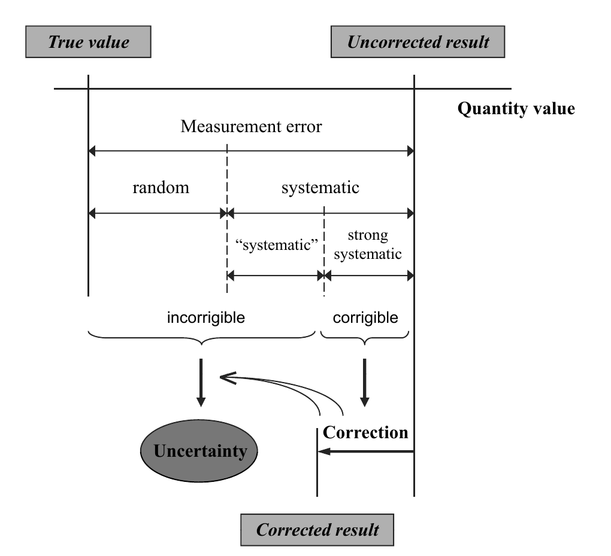
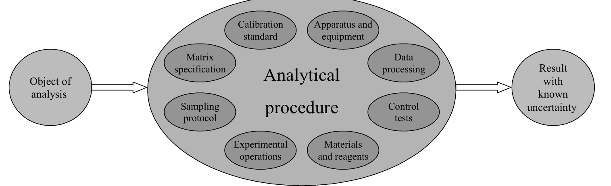
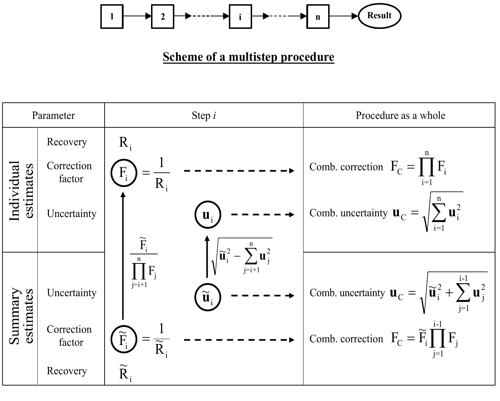
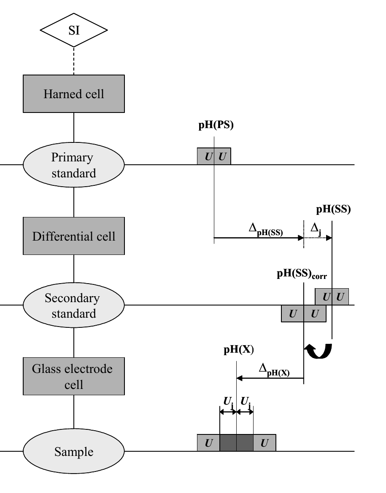

分析化学における測定不確かさの評価——関連概念と誤解されている点（Kadis 博士論文, Tartu 2008）
「不確かさ」と「精確さ（accuracy）」は捨てるか捨てないかの二択ではない。古典的アプローチの哲学と GUM の道具立てを組み合わせれば 不確かさは精確さの一数値指標として使える——という立場から 分析化学の不確かさ評価に潜む誤解を4つの具体例（多段階手順の補正係数・容量器具の許容差・二次pH標準の液絡電位・ランバイアス）で解剖した博士論文
- 第1部の核心は「系統誤差」ではなく 「系統」誤差（引用符つき）という概念。手順の実装が変われば値が変わる量なので 母集団を決めれば確率変数として扱える。化学分析ではさらに「マトリックスの異なる試料の集合」の上でも同じことが起き これが物理測定にはない分析化学固有の事情だと論じる
- 誤差は「ランダム/系統」ではなく corrigible（直せる）/ incorrigible（直せない） で分けるべきだという再分類を提案（図1）。直せる誤差は補正に使い 直せない誤差＋補正自身の不確かさが結果の不確かさになる——これは GUM の原理そのものである
- 「分析法（analytical procedure）」を 「既知の不確かさをもつ結果が得られることを保証する規定された手順」 と定義し直す。この定義には fitness-for-purpose が組み込まれており バリデーションの最重要項目は精度・真度・検出限界…ではなく 不確かさであると結論する（図2）
- 容量器具の許容差は「校正の不確かさ」ではなく 通常使用における許容誤差の限界 であり 充填の繰返し性は既にその中に含まれている。許容差ベースと実性能ベースは 択一 であって併用してはならない（表1で100 mLクラスBフラスコの実データで比較 拡張不確かさ0.18 mL 対 0.07 mL）
<!-- 方針: ほぼ全訳＋必要に応じた補足。原文（英語・DISSERTATIONES CHIMICAE UNIVERSITATIS TARTUENSIS 79・全74ページのうち本文48ページ）の節構成・段落番号（2.1.1.1 等）に沿って訳出。図1〜5は原本PDFをpoppler（pdftoppm）で300 dpi描画・図領域を切り出し、各図をReadで目視確認のうえ全訳キャプションで埋め込んだ。表1は全項目・全脚注を転記。式(1)〜(7)は原文の番号のまま、記号定義とともに全て収載。参考文献102件は全件転記。「> 補足:」は訳者注。なお本PDFには巻末の再録原著論文6報は含まれず、総括部分（〜48ページ）＋CV＋叢書一覧のみ。 -->
書誌情報
- 原題: Evaluation of measurement uncertainty in analytical chemistry: related concepts and some points of misinterpretation
- 著者: Rouvim Kadis
- タルトゥ大学 理工学部 化学研究所（Institute of Chemistry, Faculty of Science and Technology, University of Tartu, エストニア）
- 所属母体: D. I. メンデレーエフ計量研究所（VNIIM）, サンクトペテルブルク, ロシア
- 学位: 化学博士（Ph.D.）論文／DISSERTATIONES CHIMICAE UNIVERSITATIS TARTUENSIS 79
- 指導教員: Ivo Leito 教授（Ph.D., タルトゥ大学 化学研究所）
- 審査員（Opponent）: Ewa Bulska 教授（Dr. habil., ワルシャワ大学 化学部, ポーランド）
- 受理: 2008年6月11日（タルトゥ大学 化学研究所 博士課程委員会）／公開審査: 2008年9月15日 15:00, タルトゥ大学本館 204号室
- ISSN 1406–0299 ／ ISBN 978–9949–11–904–2（冊子）・978–9949–11–905–9（PDF）
- 発行: Tartu Ülikooli Kirjastus（タルトゥ大学出版）
- 被引用数: 0件（OpenAlex, 2026年8月時点。学位論文のため引用は原著論文側に付く）
補足: 本論文は、著者がすでに発表した原著論文6報を総括する形式の博士論文です。エストニア（およびフィンランド・スウェーデンなど北欧）の博士論文はこの「論文集約型」が一般的で、前半に総括（summary）、後半に原著論文の再録が付きます。本サイトが受け取ったPDFには再録部分は含まれず、総括部分（本文48ページ）＋履歴書＋叢書一覧のみが収録されています。したがって本解説は総括部分の全訳です。 当サイトには同じ著者の原著論文I（Kadis 1998, Accred Qual Assur）の全訳もあります。本論文の 3.1 節は論文I の内容を、3.2 節は論文IV（Talanta 2004）を、3.3.1 節は論文III（Anal Bioanal Chem 2002）を、3.3.2 節は論文V（Analyst 2007）を、それぞれ要約・発展させたものです。
本論文の基礎となる原著論文
本学位論文は次の論文に基づいており、本文中ではローマ数字で参照される。
| 番号 | 書誌 |
|---|---|
| I | R. Kadis. Evaluating uncertainty in analytical measurements: the pursuit of correctness. Accreditation and Quality Assurance. 1998, 3(6), 237–241.<br>再録: Measurement Uncertainty in Chemical Analysis. P. De Bièvre, H. Günzler (Eds). Berlin, etc.: Springer, 2003. Pp. 147–151. |
| II | R. Kadis. Analytical procedure in terms of measurement (quality) assurance. Accreditation and Quality Assurance. 2002, 7(7), 294–298.<br>再録: Measurement Uncertainty in Chemical Analysis. Springer, 2003. Pp. 1–7.／Validation in Chemical Measurement. Springer, 2005. Pp. 148–152. |
| III | R. Kadis. Secondary pH standards and their uncertainty in the context of the problem of two pH scales. Analytical and Bioanalytical Chemistry. 2002, 374(5), 817–823. |
| IV | R. Kadis. Evaluation of measurement uncertainty in volumetric operations: the tolerance-based approach and the actual performance-based approach. Talanta. 2004, 64(1), 167–173. |
| V | R. Kadis. Do we really need to account for run bias when producing analytical results with stated uncertainty? Comment on 'Treatment of bias in estimating measurement uncertainty'. Analyst, 2007, 132(12), 1272–1274. |
| VI | R. L. Kadis. Measurement uncertainty and chemical analysis. Journal of Analytical Chemistry, 2008, 63(1), 95–100. |
略語
| 略語 | 原語 |
|---|---|
| ASTM | American Society for Testing and Materials（米国材料試験協会） |
| CITAC | Co-operation on International Traceability in Analytical Chemistry |
| emf | electromotive force（起電力） |
| GUM | Guide to the Expression of Uncertainty in Measurement（測定における不確かさの表現のガイド） |
| IEC | International Electrotechnical Commission（国際電気標準会議） |
| ISO | International Organization for Standardization（国際標準化機構） |
| NBS | US National Bureau of Standards（米国国立標準局） |
| RLJP | residual liquid junction potential（残留液絡電位） |
| QUAM | Quantifying Uncertainty in Analytical Measurement |
| RSC | Royal Society of Chemistry（英国王立化学会） |
| VIM | International Vocabulary of Basic and General Terms in Metrology（国際計量計測用語集） |
1. 序論
この10年間で、測定不確かさの概念は分析品質の領域における重要な新しいパラダイムとなり、分析結果の精確さの単一の尺度を提供するようになった。一般に、測定、とりわけ分析測定は、その不確かさを知らずには適切に解釈できない。それに応じて、産出される結果の不確かさの評価に関する要求は、分析試験室の品質システムを定める ISO/IEC 17025 規格[1]に、また医学検査室に特化した ISO 15189 規格[2]にも盛り込まれた。測定不確かさの評価は、国際的な方針[3]に沿って認定機関に奨励され、特に認定試験室において分析試験室の一般的な実務となりつつある。
基礎となるISOガイド[4]とその分析化学への翻案である EURACHEM/CITAC ガイド[5]から、最近の EUROLAB 報告書[11]に至るまで、いくつもの指針文書[4–11]が発行され、幅広い分析応用において不確かさをどう推定するかについて有用な指針と実例を提供してきた。少数の批判的レビュー[12, 13]は、主として評価プロセスの異なるアプローチ（「ボトムアップ」と「トップダウン」）に焦点を当て、その長短を論じている。化学分析における測定不確かさ推定の問題は、EURACHEM が主催した複数の国際ワークショップ[14, 15]（例）、および世界中の他組織が開いたセミナー・講習会の中心的テーマであり続けた。また関連する広範な問題を扱う書籍[16, 17]も出版されており、その最初のもの[16]は全編が雑誌論文からの集成である。
測定不確かさ方法論を分析実務に導入するために払われた多大な努力にもかかわらず、その実践的実装にはなおいくつかの問題が影を落としている。分析の不確かさはしばしば適切に推定されておらず、その結果、同一の分析手順に対して試験室ごとに広範囲にばらついた不確かさの値が得られていることが調査[18]から明らかである。分析結果が規定要求への適合／不適合の検証に用いられる規制領域では、与えられる推定値がしばしば無効であることが判明するため、不確かさの表明の信頼性という問題が緊急のものとなっている[19]。このことは、分析データ品質の指標としての測定不確かさの有用性を著しく減じている。一部の分析者は、分析化学における不確かさ概念の適用可能性に対して懐疑的、あるいは敵対的でさえある[20–23]。
上記の問題は、分析・計量の両コミュニティで今なお議論中である不確かさ方法論の内在的困難[12, 24]に帰しうるのは一部にすぎない。むしろそれは、計量学的概念に対する根本的理解の欠如と、不確かさ推定手順の実践的標準化の困難の帰結である。それは分析化学における不確かさ推定のいくつかの誤解点として現れる。たとえば、実際には独自の個別寄与をなさないものを別個の成分と見なしてしまう不確かさ源の不適切な同定や、持続的バイアスを無視する一方でランバイアスを勘定に入れるといった分析バイアスの不適切な扱いである。
計量学一般、とりわけ測定不確かさやトレーサビリティといった問題は、大多数の分析化学者にとって新しく、その多くはその価値を確信していない。化学に計量学的概念を導入することに大きく寄与したEURACHEM初代会長 Bernard King 博士は、この2つのコミュニティで採られるアプローチの違いについて、計量学者と分析化学者のあいだの思考のギャップは、部分的には誤解に、部分的には用語法の違いに由来すると書いている[25]（自らを両方だと考える人はあまり多くない、とも）。これに加えるべきは、化学分析における品質の問題は伝統的に統計学の領分と見なされてきたこと、そして計量学的な考え方と統計学的な考え方を区別しないことが重大な混乱を招きうることである。統計学者が提案した、いわゆる「不確かさの操作的定義」[26]——推定された不確かさを単なる中間精度に還元してしまうもの——はそうした混乱の一例である。
分析化学の研究から専門的計量学へ移ってきた著者による本研究の目的は二重である。第一は、計量学と品質保証に関わる関連概念の文脈のなかに測定不確かさの概念を位置づけること。これにより、分析科学とサービスにおける測定不確かさの本質と役割についてより良い洞察が得られる。第二は、公刊されたガイドや現在の文献に見られる分析の不確かさ評価における誤解点をいくつか示し、適切に扱われてこなかった分析上の問題に正しい解を与えることである。より一般的な文脈では、著者が追求した目的は、計量学者と分析化学者のあいだの「文化的ギャップを架橋する」ことを促進することにある。両方の文化にとって受け入れ可能な、化学測定における単一の計量学が確立される必要があるからである。
2. 分析の品質保証における測定不確かさと関連概念
2.1. 精確さおよび誤差との関係における測定不確かさの概念
2.1.1. 定義と歴史的概観
2.1.1.1. 国際計量計測用語集（VIM）の新しい第3版[27]（2.26）における「測定不確かさ」の定義は次のとおりである。
測定不確かさ（measurement uncertainty, uncertainty of measurement, uncertainty） 用いた情報に基づいて、測定量に帰属される量の値のばらつきを特徴づける非負のパラメータ。
この定義は、不確かさの推定値を得るにあたって測定量について入手できる情報を適切に用いることの重要性を強調している。より重要なのは、この定義も、VIM第2版のそれ[28]（3.9）も、我々が測定において暗黙のうちに見出そうとしている「真値」という知りえない量には言及していないことである。もっぱら測定結果とその評価された不確かさに焦点を当てている。この哲学こそ、1993年に『測定における不確かさの表現のガイド（GUM）』[4]が現れて以来展開されてきた、現代の測定不確かさ方法論の中心点の一つを構成する。
一方、GUM自身は他の伝統的な不確かさの概念を排除しておらず、それらも——ただし「理想として」——妥当と見なしている[4]（2.2.4）。そうした概念の定義はVIM第1版[29]（3.09）に見出せる。
測定の不確かさ 測定量の真値がその中にあるような値の範囲を特徴づける推定値。
さらに早い時期の不確かさの定義の言い回しは、1973年の『精確さの詳細な表明のための実施基準（A Code of Practice for the Detailed Statement of Accuracy）』[30]に与えられている。
測定量の真値が存在すると信じられる、最終結果の周りの値の範囲。
2.1.1.2. つまり、不確かさは計量学において新しい概念ではなく、そこでは伝統的に測定の誤差の起こりうる限界の推定値と解釈されてきた。長らく、不確かさの推定は、測定結果の周りの信頼できる誤差限界の評価として扱われてきた。
米国国立標準局（NBS）の Ch. Eisenhart による1968年の論文[31]の一節は、今日でも現実性を失っていない不確かさ推定の問題をよく表している。その趣旨はこうである——厳密に言えば、報告された値の実際の誤差、すなわち真実からの偏差の大きさと符号は、通常は知りえない。しかしこの誤差の限界は、報告値を得た測定プロセスの精度と、その測定プロセスの起こりうるバイアスの合理的な限界とから、間違っている危険をいくらか伴いつつも、通常は推論できる。
しかしながら、不確かさ成分の推定の最良の方法についても、それらを最終的に合成する方法についても、合意はなかった。伝統的な区分に沿って、それぞれ対応する源から生じる「ランダム不確かさ」と「系統不確かさ」は推定プロセスで別々に伝播され、それらをどう合成するか——たとえば線形加算か二乗加算か——という問題は数十年にわたる論争の的であった[32]。実際、1981年に発表された調査[33]では、ランダム不確かさの計算法が 7種（Vertrauensgrenze des zufälligen Fehlereinteils）、系統不確かさの計算法が 9種（Vertrauensgrenze des nichterfaßten systematischen Fehlereinteils）、合成不確かさの計算法が 9種（Vertrauensgrenze des Meßfehlers, Meßunsicherheit）論じられ比較された。
標準的な不確かさ方法論は工学応用、とりわけ流体流量測定にとって不可欠であったため、妥協案が提案され、航空宇宙産業に関係する複数の組織によって標準化された[34]。線形加算でも二乗和平方根でも、あるいは他の合成法でも、2成分を別々に報告し、不確かさの式の選択を利用者が明記するという条件で許容することが受け入れられた。書籍[35, 36]が、90年代初頭までになされた工学問題における不確かさ方法論の進展を総括した。1993年のGUM刊行は、科学技術の様々な分野への計量学的概念の広範な適用を告げる新時代を開いた。
2.1.1.3. 分析化学における「不確かさ」もまた新しくない。L. Currie は1978年に[37]（p. 128）、化学分析の結果は、その不確かさの現実的な推定値を伴わなければほとんど価値がないと書いた。そして不確かさ成分の適切な分類が提唱された——「推論された（inferred）」成分と「見積もられた（estimated）」成分への細分は、全体の不確かさの意味について不可欠な情報を提供する。注目すべきは、この細分が、誤差源をランダムと見るか系統的と見るかにかかわらず提案されたことであり、これは現代の測定不確かさ方法論が Type A と Type B の推定不確かさを扱うのとほぼ同じやり方である。
もちろん、分析領域における「不確かさ」という語の意味は時代とともに変わった。当初は「不確かさ」とは、分析結果を提示する際に記号「±」の後に置かれる数を意味し、これは起こりうるランダム誤差を特徴づけていた。1930年代にASTMが発行した『データ提示に関するマニュアル』[38]は、日常的な統計に基づいて「不確かさの限界」を計算する規則を確立した。40〜50年代には、これらの限界の評価が分析手順の研究における一般的な実務となった[39, 40]。しかし70年代の終わりにはすでに、化学分析における不確かさは全測定誤差の限界を意味すると考えられるようになった。この不確かさの意味はNBSの分析化学者たちの仕事で明らかにされ、最終的に J. Taylor による定義[41]に表現された。
不確かさ 真値がその中にあると推定される値の範囲。ランダム誤差と系統誤差の両方による、起こりうる不正確さ（inaccuracy）の最良推定値である。
同時に、計量学と密接に関わっていない分析化学者たちは自分たちの道を進み、同じ問題を解くのに自分たちの用語法を用いた。分析結果の受容可能性を判定するための多くの基準が提案され、それらはランダム誤差と系統誤差の区間推定を何らかの形で組み合わせている。「total error」[42]、「total analytical error」[43]、「maximum total error」[44]などが挙げられる（他は文献44を参照）。
2.1.2. 不確かさと精確さ。哲学の違い：化学者の見方
上の最後の定義は、不確かさとは起こりうる「不正確さ（inaccuracy）」の推定値にすぎないと述べている。この語の肯定的な含意——「精確さ（accuracy）」——は分析化学者に長年一般的に使われてきた。精確さは常に分析法と分析結果の品質を特徴づける最も重要な概念と考えられ、分析特性の階層のなかで最上位の分析的性質と認識されてきた[45]。したがって、精確さと不確かさという2つの概念の相互関係の問題は考察に値する。
2.1.2.1. VIM[27]（2.13）における定義によれば、
測定精確さ（measurement accuracy, accuracy of measurement, accuracy） 測定された量の値と測定量の真の量の値との一致の近さ。
すなわち精確さは定性的な概念である。とはいえ、ランダム誤差と系統誤差にそれぞれ対応する「精度（precision）」と「真度（trueness）」の観点から記述すれば定量化できる（標準化された用語法におけるこれらの用語と概念の進化の概観は[46]にある）。この線に沿えば、精確さの2つの尺度、すなわち推定標準偏差と（バイアスの限界）が評価・報告されるべきことになる。伝統的な測定誤差の理論が説くように[47]、この2つの数値は、誤差成分の性質が異なるがゆえに、いかなる方法でも厳密には合成して（不）精確さの全体指標を与えることはできない。そして分析化学において分析法・分析結果の（不）精確さが伝統的に評価されてきたのは、まさにこのやり方——2成分ベクトルとして——であった[37, 48–50]。この方法論は、方法性能研究に関するIUPAC統一プロトコル[51]と ISO 5725 シリーズ国際規格[52]に体現されている。
2.1.2.2. VIM第3版の論拠に関する最近の論文[53]では、測定の哲学と記述に対する2つの異なるアプローチが定式化され、そこでは「古典的アプローチ」と「不確かさアプローチ」と呼ばれている。
古典的（伝統的）アプローチは、はやくも1971年に論じられたとおり[54]、2つの公準に基づく。
- α — 測定される量の真値が存在する
- β — 真値を求め尽くすことは不可能である
第一の言明は、測定の必要な前提であり目的として現れる。測定を始めるにあたって我々は、測定される量の何らかの値が存在し、それを見出そうとしているという信念から出発する。第二の言明は、我々の努力は近似、すなわち真値の推定値しかもたらさないと述べる。これは測定誤差が不可避であるという事実と等価である。
一方で不確かさアプローチは、GUMをその最も顕著な代表として、真値を知ることは不可能であり、さらに測定量の定義と整合する真値の集合が存在しうるのだから、得られた値が真値にどれだけ近いかを知ることは不可能であると主張する。かくして「測定誤差」は抽象的概念となり、実務では役に立たない。実践的により重要なのは、このアプローチが、既知の系統効果に対する補正がなされた後で、ランダムな「効果」と系統的な「効果」（ここでは「誤差」という語は使われない）の双方から生じる情報を、すべて標準偏差様の量として対等に合成する定量的手段を提供することである。その結果、用いたすべての情報に基づいて、測定の品質を特徴づけるために用いられる確率分布関数（PDF）の分散が推定される。
2.1.2.3. 不確かさアプローチが測定の哲学的基礎において根本的に異なる立場を含意しているという事実は、研究者たちの注意を逃れてきたようである。このアプローチが実際に意味するのは（文献55参照）、「数は世界のなかにある」（J. ケプラー）、実際「測定において数は割り当てられるのではなく発見される」[56]という言明から、「数は我々自身によって自然に割り当てられる」（R. カルナップ）という言明への概念の移行であり、そこでは測定は決定（determination）ではなく（数の）割り当て（assignment）となる。これは測定の一般的な概念的基盤の根本的な変更であり、真値という概念そのものが単に無用のものとして消滅する。
真値の実在性については長年の論争がある——経験的に到達できないのなら「真値」は本当に存在するのか。少し前に分析測定に関してこの問いが提起された[57]——そもそも自然のなかに、あるいは我々の実験のなかに「真値」はあるのか。ないのなら、真値のことは忘れるべきではないか。
（物質の化学組成の）決定を実際に扱う分析化学者は、これらの挑戦的な考えを受け入れる用意はおそらくない。「真値」を語るとき、化学者が念頭に置いているのは実際の正しい組成である。そして化学的実体（分子・イオン）は原理的に数えることのできる離散的な実体であるから、正しい組成は確実に存在する。分子を数えることは実際にも（たとえば原子間力顕微鏡を用いて表面上で）ますます可能になりつつあり、真の物質組成は到達可能になっている。多くの場合、分析者はブランク試料に既知量の純物質を添加することで自ら真値を設定できる。したがって化学的な考え方にとって真値の実在性は疑いの余地がない。
2.1.2.4. 分析測定における新しい哲学の最も一貫した提唱者の一人である Paul De Bièvre 教授は、不確かさの評価によって「（『真値』に結びついているがゆえに）疑わしい意味の『精確さ』は、実践的な『測定不確かさ』に置き換えられる」のであり、「精確さ」や「真値」を非生産的な概念として言及する必要はもはやない、と論じる[58]。しかしながら[53]で論じられているように、不確かさアプローチで実際になされているのは、「測定量の『本質的に一意な』（真の）値が、与えられた確率で存在すると考えられる」区間を確立することである。真値の概念は測定の目的を定式化するのに確かに必要であり、ただ不確かさ区間の評価に直接使われないだけである。問題は、計算に使わないという理由で「真値」を我々の意識から追放することが正当化されるかである。
著者の意見では、不確かさ評価に関して伝統的な精確さの概念を捨てることは、有益でも必要でもない。古典的アプローチの哲学を、不確かさアプローチが提供する道具と実践的方法論と組み合わせて用いるのがきわめて適切であるように思われる。このようにすれば、測定不確かさは、明確な規則に従って構成された精確さの一数値指標と見なすことができる。
「精確さ」と「不確かさ」の関係についてのこの見解は原著論文IIで提示されたものだが、RSC分析法委員会が「不確かさの推定値はおそらく結果の精確さを表現する最も適切な手段である」と認めたこと[59]によって裏づけを得た。
2.1.3. ランダム誤差、系統誤差、そして「系統」誤差
測定誤差をランダムと系統に細分することは、精確さが精度と真度で推定される伝統的アプローチにとって根本的である。対照的に、GUMに従えばすべての不確かさ成分は、その二乗標準偏差を用いてランダム量として合成される。「ランダム誤差と系統誤差のあいだの原理的差異の否定」は、化学分析への不確かさ方法論の適用に反対する論者たちが提起した主要な論点をなした（たとえば引用元の文献22を参照）。以下の詳細な議論は、原著論文II・VIに基づき、この今日的問題に関わるものである。
2.1.3.1. 大部分において、測定誤差をこれらの型のいずれかに分類することは取り決めの問題である。それは分析システムをどの水準から見るかに依存する。ある水準で系統的に見える誤差は、システムのより高い水準ではランダムになる。たとえば（ある手順で分析を行う際の）試験室バイアスは、多数の試験室を考察対象に変えればランダム誤差になる。V. ナリモフはこれに関連して[60]、「測定の集合が明確に定義され限定されているときにのみ、ランダム誤差について語ることができる」と書いた。
そうした限定の好例は、VIM第2版[28]（3.13）における「ランダム誤差」の定義に見出される。これは併行条件（同一の作業者、同一の装置、短い期間）——すなわち1つの分析ラン内の条件——のもとでなされる測定に関係する。この戦略により、誤差の明確な分類が可能になる。他の実験条件のもとで推定された測定誤差の特性は、程度の差はあれ系統誤差成分によって「汚染」されている。
2.1.3.2. ランダム／系統への誤差細分の条件付き的性格は、M. Thompson が提案した分析誤差の階層モデル[61]からも見て取れる。このモデルによれば、均質な物質の分析結果の誤差は次の成分からなる。
- 方法バイアス（method bias）
- 試験室バイアス（laboratory bias）
- ランバイアス（run bias）
- （併行条件下の）ランダム誤差
「誤差のはしご（ladder of errors）」と呼ばれるこのモデルは、はしごの各段の不確かさ寄与を合成することで得られる結果の不確かさを評価するための基礎と見なされる。重要なのは、上に挙げた誤差成分のすべて、「バイアス」として現れるものも含めて、標準偏差によって特徴づけられる確率変数として扱われる[61]ことである。
2.1.3.3. ランダム誤差と系統誤差への細分は、既知組成の物質を所与の手順に従って分析するという、精確さの実験的推定の「技術」から帰結するものである。そうして得られる精度と真度の指標は、分析手順の品質を特徴づける。しかし顧客、すなわち何らかの目的で分析結果を使う人々が関心をもつのは、結果の品質であり、それは一つの数で表現される。この観点からは、結果の誤差がランダムか系統的か、あるいは両方の要素を含むかは問題ではない。製品——すなわち分析結果——の品質に焦点を当てれば、全誤差の特性が前面に出る。
2.1.3.4. 系統誤差とは伝統的に「同一の量の反復測定において変化しないまま、あるいは規則的に変化する測定誤差成分」[62]を意味する。しかし実験条件の全体を精密に再現することは不可能であるため、科学者たちは早くから、系統誤差が通常一定成分と可変成分の両方を含むことを認識するに至った。Ch. Eisenhart が論じたように[47]、単一の距離を反復測定する場合でさえ、系統的に見える効果のいくつかは一定であるが、いくつかは機会ごとに（たとえば日ごとに）変動すると予想され、系統誤差に可変成分を寄与する。化学分析では、これらの誤差成分は古くから「veränderliche (schwankende) systematische Fehler（変動する系統誤差）」[63]、「系統誤差成分の可変部分」[64]、あるいは「系統誤差のランダム成分」[65]として知られてきた。重要な点は、一定の（強い系統的な）誤差成分は、推定され既知になれば結果に補正を適用することで除去できるが、可変成分はランダム量として、通常のランダム誤差寄与とともに勘定に入れられるべきだということである。
2.1.3.5. これらの考えは、まさに測定不確かさ推定の問題の文脈で、系統誤差のランダム化（randomization of systematic errors）という構想[66, 67]において発展させられた。それに従えば、伝統的に系統誤差と呼ばれてきたものは、考察対象の実験について起こりうる系統誤差の値すべての母集団からランダムに取られた1つの特別な値として扱われる。このようにして、それぞれの確率分布を仮定した、特異な確率変数——いわゆる「系統」誤差——が導入される。統計的情報がないときにそうした（仮想的な）分布の分散を定量することは特別な問題であり、この場合は経験と入手可能な知識に基づく主観的推定を用いねばならない。しかしこのアプローチにより、ランダムと「系統」の両方の誤差寄与を対等に扱い、対応する分散として、結果として生じる確率分布の分散へ合成することが可能になる。
2.1.3.6. ある手順を用いて得られた（あるいは得られるであろう）分析結果の精確さが関心の的であるとしよう。それが所与の装置で、所与の分析者によって、あるいは所与の試験室で行われた（行われる）必要はない。言い換えれば、我々が関心をもつのは、手順の1つの実装ではなく、起こりうる多数の実装を用いて得られる結果の精確さである。このような問題設定では、それらの実装のそれぞれに内在する局所的な系統誤差は、確率変数「系統」誤差の値として現れ、厳密な意味でのランダム誤差と根本的に異なるものではない。違いは、それが観測された測定値の母集団とは同一でない母集団の上で定義されている点だけである。
この状況は、いわゆる技術的測定（技術者が制御工学で通常行うもの）に典型的であり、そこでは規定された手順に従って結果が得られ、精確さは測定がなされる前に評価される。技術的測定で採用されているランダム誤差と「系統」誤差という分類[68]は、全不確かさの計算において構成要素を（二乗標準偏差として）合成する統一的方法を提供する。同じ原理は、たとえば書かれた標準に述べられた規定手順に従って分析対象成分が定量される分析測定にも適用可能である。化学分析で通常ルーチンと呼ばれるのは、そうした測定である。
2.1.3.7. 物理測定において導入された「系統」誤差の概念は、化学分析においてとりわけ適切であると自信をもって言える。ここでこの誤差は2種類の実装の集合の上で生じる。すなわち、手順の実装の集合と、その手順で分析される、マトリックス組成や物理的性質が異なり測定結果に影響する試料の集合である。実際、これらの性質における試験試料と標準物質の差は、通常は校正の不適合と結びつけられる「系統」誤差の出現をもたらす。これは化学分析に典型的である。
2.1.3.8. 分析測定において、固定された、あらかじめ決定された校正関数を用いて「同じマトリックスの」未知試料を分析するときには、マトリックスの不一致は常に随伴する。通常、分析手順は「全体的な」校正関数が使えるように、ある範囲の試料マトリックスをカバーするように開発される。したがってマトリックス不一致による誤差は、必ずしも有意とは限らないにせよ不可避である。それは実際、分析手順に関連する全変動の内在的な一部をなす。
一方、これらの効果は、受け入れられているプロトコル[51, 52]に従った「方法性能研究」から得られる通常の精確さの尺度にはまったく含まれていない。そこで定義される精確さ実験（文献52, Part 1, Section 4.2）は、同一の試験品に限定されており、マトリックス依存の可変寄与を前提としていない。基礎にある統計モデルは、試験室成分のバイアスのみが考慮されると仮定している。
この種の誤差源こそ、「ランダム」と「系統」の区別をしない測定不確かさの概念で公正に扱われるものである。模擬試料（simulated samples）を用いれば、マトリックスの効果は、結果に影響し分析試料と校正標準で水準が異なりうる因子について直接調査できる。そうした研究のための実験計画——マトリックス因子を少なくともその上限と下限に対応する2水準で振るもの——は、はるか以前から提案されている[69, 70]。
2.1.3.9. 導かれる結論は、誤差をランダムと系統に伝統的に細分することは、特異な確率変数「系統」誤差が生じる、規定手順に従う測定における誤差構造の現在の見方と整合しないということである。これはとりわけ分析測定に典型的である。
誤差を corrigible（我々が何かできるもの＝直せる誤差）と incorrigible（我々が何もできないもの＝直せない誤差）に分類するほうが適切であろう。その場合、ランダム成分と「系統」成分の両方が第2のグループに併合される。はるか以前に提案されたこの誤差分類[71]は、GUMの不確かさ評価の原理と整合する。実際、corrigible な誤差の推定値は補正を行うために使われ、incorrigible な誤差は結果の不確かさに寄与し、そこには補正の不確かさも勘定に入れられる。これを模式的に示したのが次の図（図1）である。

補足: この図1が本論文の第1部の要約になっています。ポイントは下段の再分類です。従来の「ランダム/系統」という切り分けは、その誤差について何ができるかを教えてくれません。対して corrigible / incorrigible は「補正できるか、それとも不確かさに載せるしかないか」という行動に直結する分け方です。そして GUM の手続き——既知の系統効果は補正し、補正の不確かさを含めて残りを合成する——は、まさにこの分け方に沿っています。
2.2. 分析手順（analytical procedure）——化学分析における品質保証の鍵概念
2.2.1. 測定保証、測定不確かさ、測定手順
K. Doerffel は分析科学を化学と計量学のあいだの学問分野と呼んだ[72]。これに沿って、分析サービス——顧客のニーズのために化学分析を行う一種の分析産業——は、化学・計量学・工業的品質管理の概念に基づくシステムとして定義できよう。
2.2.1.1. サービスとしての分析業務において原理的に重要なのは、測定を「生産プロセス」の観点から見ること、すなわち測定結果を、工業生産プロセスに類比される反復可能なプロセスの出力と見なすことである。これは化学測定プロセスとも呼ばれる。そうすれば、物理測定で発達した品質保証の原理と技法を分析業務に適用できる。これらの原理と技法が構成するのが測定保証（measurement assurance）[73]の領域であり、これは測定プロセスで産出される測定値が妥当である——すなわち意図する使用にとって十分良い——という確信を与えるシステムである。
計量学的立場からすれば、「十分良い」とは単に許容できる不確かさをもつことを意味する。測定が何らかの実践的必要に応えるものであるなら、それは目的から生じる精確さ／不確かさへの要求を満たすことである。1974年のNBS報告書[74]からの引用の趣旨はこうである——個々の実際の測定について必要なのは、結果の不確かさがその意図された使用にとって十分であることだけである。この場合にこそ、測定結果は「目的適合（fit for purpose）」と見なされる。
2.2.1.2. 実際には、測定として定義された一連の操作に関連する不確かさが決定されるべきであり、測定がなされるこの一連の操作が測定手順を構成する。
測定不確かさ方法論の特徴は、いかなる数値的測定も孤立して考えられず、測定を生み出すプロセスとの関係で考えられることである。プロセスで作用するすべての因子が定義されれば、それらが実際に関連する不確かさ源を決定し、それらを定量して最終的に全不確かさの値を導くことが実行可能になる。GUMに示された不確かさ方法論は、規定された測定手順という考えにぴったり合うと言える。手順こそが、不確かさの表明が参照する文脈を定義するからである。
化学分析におけるこの戦略の基礎には2つの基本命題がある。第一に、分析手順は、化学測定プロセスが管理状態で運用され、規定どおりに実施されるならば、評価されるべき内在的な精確さをもつ。第二に、所与の手順に典型的な精確さの尺度（この場合は測定不確かさ）は、産出される結果に転写でき、それらに一定の信頼性を与える。両命題の正当化は、分析性能に関する W. Youden の仕事[75, 76]で与えられた。
2.2.1.3. このアプローチの実践的実装の前提として、化学測定プロセスが統計的管理状態にとどまり、規定の範囲内で運用されていることが仮定される。「管理」とは、プロセスの性能特性、すなわち精度とバイアスが、正確には決定できないにせよ固定されたままであることを意味する。
このことの証拠を提供し、無効なデータの報告を避けるためには、分析システムを継続的性能について試験する必要がある。この目的には多くの管理試験が使える。たとえば、並行測定間の差の試験、現行の試験材料の完全分析の重複、標準物質の分析などである。
重要な点は、管理試験が、所与の測定が要求するようなやり方と割合で実施され、分析手順全体の不可欠な一部をなすことである。この場合、管理試験はより特異的になり、測定プロセスの重要点に関係するようになる。
2.2.1.4. この図式で重要なのは、測定不確かさが手順の開発とバリデーションの段階で、定常的な使用に先立って推定され、その不確かさが、規定条件下でその手順を適用して将来得られる結果に割り当てられる、ということである。このアプローチは、2.1.3.6項で論じたように化学分析でルーチンと呼ばれる測定に共通である。
2.2.2. 品質保証の観点から見た分析手順
分析化学において効果的な品質保証戦略を促進する道の一つは、品質の側面を一般的な分析概念のなかに統合することである。「分析手順」という概念は、そうした品質志向の（再）定式化に最も適しているように思われる。
2.2.2.1. まず「方法（method）」ではなく「手順（procedure）」という用語を適切に使うことが注目に値する。これらの用語は、一般から特殊への系列として表現される分析方法論の階層[77, 78]における隣接する2つの特定性水準に対応する。
技法（technique） → 方法（method） → 手順（procedure） → プロトコル（protocol）
これに従えば、手順の水準は、方法を利用するために必要な具体的な指示を提供する。
しかしこの命名法は常に守られているわけではない。多くの場合、分析方法が語られているとき、事実上は分析手順が含意されている。書かれた標準は通常「分析方法（method of analysis）」と題されているが、適用にあたって従うべき具体的な指示を提供している。「分析方法のバリデーション」や「分析方法の性能特性」といった表現は、用語の不正確な使用の典型例である。
他方、階層の最も特定的な2つの水準を区別する理由は通常なく、「手順」の語を「プロトコル」と呼ばれるものにまで及ぼしてよい。[77]における2つの概念の定義によれば、どちらの場合も具体的な文書化された指示に忠実に従わねばならない。品質保証の用語法で使われ、VIMでも「測定手順」の同義語として言及されている[27]（2.6）「標準操作手順（standard operating procedure, SOP）」という語（文書の標準化された形式に重点がある）は、階層のこの2水準をカバーしているように思われる。
2.2.2.2. 一般概念としての分析手順と、その個別の実装、すなわち特定の状況のもとで具現化された手順の個々のバージョンとは区別する必要がある。実務上、分析手順は、装置・試薬・環境条件、さらには分析者自身のやり方の点で異なる多様な実装として存在しうる——それらがすべて規定の範囲内であれば。2.1.3.6項で説明したとおり、この変動性は測定手順に関連する特徴的な不確かさ源である。
2.2.2.3. 通常の意味では「分析手順」という語は、分析を実施する際に何をしなければならないかの記述を意味するにすぎない。[79]で参照されているこの概念の定義はむしろ漠然としている——「分析手順とは分析の実施方法を指す。各分析試験を実施するために必要なステップを詳細に記述すべきである。これには次を含みうるが、これらに限らない：試料、標準物質および試薬の調製、装置の使用、検量線の作成、計算式の使用など」[80]。要するに、分析を実施するために行うべきすべての記述、ということである。
2.2.1.2項の議論は、この概念に品質保証の側面を含める根拠を与える。問題なのは単に「分析の実施方法」ではなく、規定された品質の結果が得られることを保証する方法である。概念の決定的側面を与えるために、精確さ／不確かさの制約が定義に組み込まれるべきである。かくして品質保証の観点から与えられる定義に到達する。
分析手順とは、それに従えば既知の不確かさをもつ分析結果が得られることが保証される、規定された手順である。
これを模式的に描いたのが図2であり、分析手順の典型的な「構成要素」が示されている。

2.2.2.4. このように定義された分析手順の概念は、「方法バリデーション」の問題に対する進んだ見方を提供する。この語は一般に、方法の性能特性と限界を確立し、「方法が目的に適合している」[81]こと、すなわち特定の分析問題を解くのに適していることを検証するプロセスを意味する。問題は、顧客のニーズに基づいて適合性をどう評価するかである。
一般に推奨されるのは[80, 81]（例）、精度と真度、検出限界と定量限界、選択性、感度などの多くの特性を分析性能の基準として考え、バリデーション研究の過程で評価することである。これに基づき、当該手順が規定の分析要求を満たしうるかどうかの判断がなされる。しかし顧客の観点からは、第一の関心事は最終製品としての分析結果の品質である。この点で、産出されるデータが目的に適合してさえいれば、その手順は適していると見なされる。
したがって、測定不確かさこそが、バリデーション研究において他に優先して考慮されるべきパラメータである。他の特性は、方法論が十分に確立され完全に理解されていることを保証するために望ましいが、それらの基準そのものによるバリデーションは、通常は対応する要求が欠けていることからしても実際的でないように思われる。すなわち、不確かさの評価と、不確かさ要求への適合の評価が、バリデーションの究極の目標をなすべきである。上のように定義された分析手順により、そうしたバリデーションプロセスのための概念的枠組みが展開されつつある。
もともと原著論文IIで提示されたこの立場は、単一試験室バリデーションに関するIUPAC指針[82]——「…方法バリデーションは測定の不確かさを推定するという課題に等しい」と述べる——によって裏づけを得た。分析手順を選択する際の従来の性能特性の集合を、測定の不確かさが分析対象成分の濃度とともにどう変化するかを記述する単一の「不確かさ関数（uncertainty function）」で置き換えるという最近の提案[83]も、同じ方向の動きを表している。
補足: ここは実務的に非常に大きな主張です。ICH Q2 に代表される従来のバリデーションは「直線性・真度・精度・特異性・検出限界・定量限界…」というチェックリストでした。本論文（および引用されているIUPAC指針）は、それらは手段であって目的ではなく、最終的に問うべきは「この手順で出す結果の不確かさが、用途の要求を満たすか」の一点だと言っています。近年の ICH Q14／Q2(R2) が analytical target profile（ATP）を出発点に据えたのは、まさにこの方向の制度化です。
2.3. 不確かさ推定におけるGUMと「全法（whole method）」性能方法論
2.3.1. モデリングアプローチと経験的アプローチ
2.3.1.1. GUMの原理は、異なる不確かさ源からの個別寄与の合成によって不確かさが計算される、一貫性のある広く適用可能な方法論をなす。この伝播手続きは、関連するすべての不確かさ源の同定、その大きさの推定、そして成分を合成して合成標準不確かさ、次いで拡張不確かさを形成することを含意する。これと並行して、バイアスの起こりうる源（図1で強い系統誤差として描かれた誤差）が調査され、有意な系統効果に対する補正が想定される。したがって、結果に影響する因子の詳細な解析と、それらの因子が入力量として現れる定量的モデルが要求される。
2.3.1.2. 分析化学の問題に特化してGUMを翻案した有用なガイド『Quantifying Uncertainty in Analytical Measurement（QUAM）』[5]が作られ、GUMの原理が定量的試験の分野へ拡張された[7, 10]にもかかわらず、この方法論は主として「計量学志向の」分析化学者のあいだで支持を得たにとどまる。実際、このアプローチは「全法」性能の評価に伝統的に用いられてきたものとは大きく異なる。精度や真度といった性能特性は、試験室内または共同試験における手順の開発とバリデーションの過程で得られる。その場合、影響因子の解析も数学的モデルも必要ない。アプローチは完全に経験的だからである。
2.3.1.3. これは、2.1.2.2項で論じた測定への2つの主要アプローチ、古典的方法論と不確かさ方法論におけるモデルの役割に対応する。一般に、不確かさアプローチは測定によって得られる知識のモデル依存性を強調し、古典的アプローチはモデルの役割を小さく見る傾向がある。分析測定に関して言えば、化学測定プロセスの網羅的モデルは、プロセスの複雑さゆえに常に構築できるとは限らない。システム理論[84]において分析手順がブラックボックス、すなわち内部構造が未知のシステムとして扱われるのも驚くにはあたらない。ブラックボックスをホワイト（透明）ボックスに変えるのは容易ではない。これこそ、分析化学で「全法」性能研究が伝統的に用いられてきた理由である。
2.3.1.4. RSC分析法委員会[85]は、伝統的な「全法」性能研究を、GUMに基づく「ボトムアップ」法と対比される、不確かさを扱う「トップダウン」法と見なすことを提案し、根拠づけた。トップダウンアプローチでは、試験室は「より高い水準」から、すなわち試験室母集団の一員として見られ、共同試験は運用上の影響因子の組合せの代表標本を取ると仮定される。したがって、共同試験で得られる再現標準偏差は、GUMに従って得られるであろう合成不確かさの良い推定値である。実際には、不確かさ成分の個別の定量と合成の代わりに、直接的な集合的定量が用いられている。
2.3.1.5. ごく最近、EUROLAB[11]により別の分類図式が提示された。そこではGUMに基づく方法論が「モデリングアプローチ」と呼ばれ、単一試験室バリデーション、試験室間研究、技能試験という3つの「全法」性能方法論を包含する「経験的アプローチ」と対比される。不確かさ推定プロセスに多様な品質保証手段を取り込もうとする明確な傾向があり、これは試験室の実際の需要に合致し、一般的な分析実務をより適切に反映している。
2.3.1.6. 測定システムの網羅的解析、モデル化、不確かさの伝播に基づくモデリングアプローチは計量学的に健全であり、厳密な意味で「測定不確かさ」と呼べるのはこの評価プロセスの成果だけである。他方、経験的アプローチは全包括的な変動を一度に見込むが、直ちに十分性、カバー範囲、性能研究の特定条件から実際の条件への「外挿」の問題を提起する。測定方法に組み込まれた近似／仮定のように、その方法にとどまる限り経験的に見込むことが根本的に困難な不確かさ源も存在する。
2.3.1.7. EUROLAB報告書[11]は、測定不確かさへの経験的アプローチはモデリングアプローチと同等に妥当であると主張する。ただし[11]（1.1.3）では、どのアプローチであれ、1) 測定される量が明確かつ曖昧さなく定義されるべきこと、2) 測定プロセスが「不確かさの主要な成分を同定するために」注意深く解析されるべきことが強調されている。言い換えれば、関連する不確かさ源のリストを与えることが要求される。かくしてGUM方法論の最初の2ステップ、すなわち測定量の特定と不確かさ源の同定は、経験的調査にも移され必要となる。このようにしてのみ、[11]で宣言されているGUM原理への適合が達成されうる。
2.3.2. 合理的戦略
2.3.2.1. 問題の複雑さに鑑みると、GUM方法論を純粋な形で分析測定に実装することは困難である。いくつかの因子の複合的効果が観測可能であるなら、全体の変動とバイアスの関連する推定値を不確かさバジェットに合理的に取り込める。QUAM第2版[5]に示された計算例は、そうした混合アプローチの好例を提供する。
異なる不確かさ源を解析するにあたっては、個々の源に内在するランダム変動を分離せず、代わりに手順全体の反復で推定される実験的な併行精度として把握することは、実に効果的な方策である。バイアスとそれに伴う不確かさ成分についても同じことが言え、これらは通常、手順全体について実験的に研究される。[5]の不確かさバジェットに「repeatability（併行精度）」「bias（バイアス）」「recovery（回収率）」という項目が、また特性要因図に対応する枝が現れること自体が、純粋なGUM由来の方法論から経験的アプローチへの移行を示している。出力量を特徴づける精度が直接推定され、不確かさ源のなかに表示されているのに、測定モデルの入力量として不確かさ源を同定する点でGUMに厳密に従っていると言えるだろうか。
2.3.2.2. 従うべき合理的戦略は、異なるアプローチを併用することである。すなわち、入手可能な「全法」性能データに、実験計画で十分にカバーされていない追加の不確かさ寄与を組み合わせる。この合成プロセスでは、入手できる「最高水準」の精度尺度、すなわち共同試験からの再現標準偏差を使うのが適切である。それなら追加の不確かさ寄与による増補が最小限で済む。しかししばしば、単に併行精度の推定値を用い、それに他の必要な成分を加えざるをえない。いずれにせよ、性能情報の使用、少なくとも併行標準偏差の使用は不可欠である。
2.3.2.3. 先行研究のデータを使うにあたっては、データの関連性、条件の変動、研究に含まれていなかったかもしれない前処理ステップなど、いくつかの問題に対処する必要がある[86]。これらの問題はすべて照合（reconciliation）段階[5]（7.2.1）で答えられるべきだと推奨されている[87, 88]。そこでは、入手可能な情報が（不確かさ源の解析に基づく）必要な情報と比較される。測定に影響するが経験的調査で勘定に入れられていない因子はいずれも、全体の不確かさへの寄与について追加的に評価されるべきである。
2.3.2.4. かくして我々は、不確かさ推定において異なる方法論の組合せを扱わねばならない。この一般戦略に従うISO[8]、NORDTEST[9]、EUROLAB[11]の最近のガイドは、化学分析における測定不確かさ推定へのそうした統合的アプローチを示している。
3. 分析の不確かさ評価における誤解点
3.1. 多段階分析手順における不確かさと補正係数の定量
3.1.1. 分析手順の真度はしばしば回収率、すなわち量の測定値と期待値（参照値）の比で表現される。これは相対測定誤差が測定範囲全体でほぼ一定である場合に正当化される。この場合、分析バイアスは、結果に掛ける補正係数を用いて補正できる。
3.1.2. 原理的には、$n$ 個の逐次的ステップからなる分析手順について、各ステップ $i$ に関係する成分不確かさ $u_i$ と補正係数 $F_i$ から、合成不確かさ $u_C$ と合成補正係数 $F_C$ を次のように導ける。
$$u_C = \sqrt{\sum_{i=1}^{n} u_i^2} \tag{1}$$
$$F_C = \prod_{i=1}^{n} F_i \tag{2}$$
この方法は、ガイドQUAM第1版[89]の例A3「パン中の有機リン系農薬の定量」で具体的に用いられた。手順の異なるステップ——液液抽出、抽出液のクリーンアップと濃縮など——に対する $u_i$ と $F_i$ の値は、そこでは回収率実験から得られている。ステップ $i$ における回収率を $R_i$ とすれば、補正係数は $F_i = 1/R_i$ である。
3.1.3. 式(1)と(2)が正しいのは、合成される成分が強く独立な個別寄与を表す場合に限られる。しかしその例ではそうなっていない。たとえば抽出ステップにおける回収率 $R_3$ は、抽出に始まりガスクロマトグラフィー定量に終わるいくつもの操作を実施することで決定される。その結果、補正係数 $F_3$ は抽出に後続するステップの系統効果を含んでしまう。同様に不確かさ $u_3$ も後続するすべての不確かさを取り込んでいる。このように、計算では個別推定値の代わりにまとめ推定値（summary estimates）が実際には使われており、これが合成パラメータの推定を誤らせる。
3.1.4. ステップ $i$ の個別補正係数 $F_i$ を得るには、入手できるまとめ推定値 $\tilde{F}_i$ を、後続するすべてのステップに関係する補正係数で割らねばならない。そのうえで手順全体の合成係数 $F_C$ を計算できる。あるいは、$n$ 個すべてのステップについて個別推定値を求めずに、ステップ $i$ から $n$ までをカバーするまとめ推定値 $\tilde{F}_i$ を積の因子として使えばよい。
図3の図式は、合成補正係数 $F_C$ と合成不確かさ $u_C$ の計算における2つの可能な道を示す。まとめ推定値から個別推定値を導くのは縦向きの矢印で、合成パラメータを積または二乗和平方根として得るのは横向きの矢印で描かれている。ステップ $i$ に関係する数値（丸で示す）は、個別推定値 $F_i$, $u_i$（表の上半分）か、まとめ推定値 $\tilde{F}_i$, $\tilde{u}_i$（表の下半分）のいずれかである。

図3の表（全項目の転記）
| 区分 | パラメータ | ステップ $i$ | 手順全体 |
|---|---|---|---|
| 個別推定値 | 回収率 | $R_i$ | — |
| 個別推定値 | 補正係数 | $F_i = \dfrac{1}{R_i}$ | 合成補正 $F_C = \prod_{i=1}^{n} F_i$ |
| 個別推定値 | 不確かさ | $u_i$ | 合成不確かさ $u_C = \sqrt{\sum_{i=1}^{n} u_i^2}$ |
| （変換・縦矢印） | まとめ→個別 | $F_i = \dfrac{\tilde{F}_i}{\prod_{j=i+1}^{n} F_j}$ ／ $u_i = \sqrt{\tilde{u}_i^2 - \sum_{j=i+1}^{n} u_j^2}$ | — |
| まとめ推定値 | 不確かさ | $\tilde{u}_i$ | 合成不確かさ $u_C = \sqrt{\tilde{u}_i^2 + \sum_{j=1}^{i-1} u_j^2}$ |
| まとめ推定値 | 補正係数 | $\tilde{F}_i = \dfrac{1}{\tilde{R}_i}$ | 合成補正 $F_C = \tilde{F}_i \prod_{j=1}^{i-1} F_j$ |
| まとめ推定値 | 回収率 | $\tilde{R}_i$ | — |
3.1.5. このパターンが示すのは、不確かさの伝播プロセスが正しくあるためには細心の注意を要するということである。複雑化を避けるには、成分を「分析システムの別々の部分」からのものとしてではなく、個別（あるいは複合）の不確かさ源から生じるものとして同定しなければならない。分析システムの部分は孤立させて評価するのが困難だからである。個々のステップの効果が最終測定結果から一括して評価される多段階分析手順の事例が、この特徴を明瞭に示している。
ガイド[89]の例A3における不確かさと補正係数の評価への批判は、著者の原著論文Iで提示された。ガイド第2版[5]では、この例は（現在は例A4として）全面的に改訂され、起こりうる不確かさ源の解析と、社内バリデーション研究のデータを利用したその定量に重点が置かれるようになった。
補足: ここは重要な後日談です。原著論文Iの解説で著者が指摘した批判が、実際に EURACHEMガイド第2版（2000年）で全面改訂という形で受け入れられたことを、本人が述べています。1998年の批判が2000年の改訂に反映されたということです。
3.2. 容量測定の不確かさ：許容差ベースのアプローチと実性能ベースのアプローチ
3.2.1. ほとんどの分析手順の一部である容量の測定は、基本的な分析操作に属する。これは通常、容量器具（volumetric glassware）を用いて行われる。容量器具は分析試験室において天びんに次いで2番目に基本的な計測器である。容量操作の精確さの問題は常に今日的であり、常に、器具が製造される際の規定許容差の観点から答えられてきた（たとえば[90]のTable 4.1を参照）。
3.2.2. EURACHEMガイド[5, 89]（計算例、その付録A）は、容量の不確かさを推定する際に3つの別個の寄与を勘定に入れるべきであると述べている。
- 仕様から取られた、容量器具の容量許容差
- 容量の繰返し性実験からのランダム変動
- 周囲温度の影響
ここで2つの疑問が生じる。第一は容量器具の使用に内在するランダム変動に関するもの——それは本当に、表示された許容差に含まれていないのか。 第二はこうである——それにもかかわらず実際の性能が調べられたのなら、なぜそれを許容差の「代わりに」ではなく「とともに」使い、不確かさ推定に冗長性をもたらすのか。
3.2.3. 商業的に生産される容量器具は、通常は「最大許容誤差（maximum permissible error）」の形で、器具が準拠する書かれた標準によって規定された一定の計量学的要求を満たさねばならない。仕様への適合が製造者によってもともと保証されているか、独立した機関によって実証されているならば、器具が使用中に生じる誤差はその規定の許容誤差限界を超えないと受け入れられる。これは、容量測定を含む様々な測定分野において計測器のために確立された品質保証システムの基本的信条である。
3.2.4. 容量器具の使用には、容器を満たす、基準線または目盛りに対してメニスカスを合わせる／読む、排出用の器具であれば排液する、といった一連の操作が伴う。言い換えれば、いかなる容量測定にも、分析者が実施しなければならない何らかの操作手順が結びついている。このことは、容量器具に内在する精確さが、分離不可能な手順誤差の寄与を無視して孤立して評価することはできないという状況を導く。
すべての有意な誤差源が標準的な手順に従うことで管理下に保たれるなら、手順誤差はある限界内にあると仮定してよい。したがって容量器具については、その適正使用に典型的なランダム誤差寄与を容量誤差の限界のなかに取り込むのが慣例である。
3.2.5. 実験室用容量器具の仕様の原則を定める書かれた標準、たとえばISO規格[91]に目を向ければ、容量器具の使用における測定回ごとの変動が許容差の値に勘定に入れられていることがわかる。とりわけ、排出技術の変動により誤差が有意になりうる排出用の器具については、容量誤差の限界は併行条件下で得られる実験標準偏差の4倍以上であるように規定されている。
実験的研究から得られる証拠は、これが試験室の実務においても成り立つことを示している。一例として、原著論文IVで示されたホールピペットのデータは、99.7%信頼区間として表されるランダム誤差の寄与が、クラスAの許容差の 0.5〜0.8 のあいだに収まることを実証している。これは標準仕様から期待される割合（≤ ¾）と完全に一致する。より高い精確さの水準が目指される場合、とりわけ校正サービスでは、さらに小さなランダム変動が得られる。
3.2.6. これらの知見は、容量許容差が、容量器具の通常使用における許容誤差の限界であって、EURACHEMガイドが述べるような[5]（付録G）「校正の不確かさ」をもたらす校正時に特有のものではないことを証している。もちろん、容量器具の適正使用の手順は、資格をもち動機づけられた要員によって守られねばならない。これらの手順はISO規格[92]および適用可能な各国規格に定められており、この主題を詳細に記述した章をもつ定量化学分析の教科書は言うまでもない。
3.2.7. 不確かさ源を解析する効果的な手段は特性要因図（cause and effect diagram）を作ることである。容量操作について作成したそうした図を図4に示す。図には4つの主要な枝が描かれている。
- Procedure（手順）: 全不確かさへの手順由来の寄与を代表し、関連する因子を取り込む。
- Temperature effects（温度の影響）: 2つの異なる効果が考慮される——液体の密度の温度変化と、容器自体の容量の温度変化である。両者は「逆向きに」作用し、前者のほうが通常はるかに大きい。
- Calibration（校正）: それ自身の下位の枝、すなわち手順（procedure）と温度（temperature、上述のとおり2本の矢印をもつ）を含み、さらに秤量による質量決定に伴う効果などいくつかの追加効果を含む。
- Physical properties of the liquid（液体の物理的性質）: 主として排出過程に関わり、測定される液体と水の粘度・表面張力といった性質の差を勘定に入れる。通常用いられる希薄水溶液ではこれらの効果は小さく、無視できる。
![図4 容量操作の特性要因図（フィッシュボーン図）。右向きの背骨が Volume（容量）で、4つの主要な枝が接続する。左上 Procedure（手順）の枝には setting/reading the meniscus（メニスカスの設定・読み取り）、delivery time（排出時間）、cleanness of vessel（容器の清浄さ）、drainage effects（排液効果）、delivery technique（排出技術）。右上 Calibration（校正）の枝には procedure（手順）、balance performance（天びん性能）、mass of water（水の質量）、air buoyancy（空気浮力）、temperature（温度）、density of water（水の密度）。左下 Temperature effects（温度の影響）の枝には variation of density of the liquid（液体の密度変化）、change in capacity of the vessel（容器の容量変化）。右下 Physical properties of the liquid（液体の物理的性質）](assets/kadis-thesis-uncertainty-analytical-chemistry/fig4-cause-effect-volumetric.png)
3.2.8. 容量器具が試験室で通常どおり使われる典型的な場合、測定不確かさ評価の実践的な道は仕様の許容差を使うことである。特性要因図における上側の枝、すなわち Procedure と Calibration に関係する影響因子は、表示された許容差でカバーされている。追加で見込むべきは下側の枝、すなわち Temperature effects だけである。この補足的寄与を加えれば、標準不確かさに換算した容量許容差の使用は十分に正当化される。
3.2.9. 規定許容差では達成できない高い精確さが要求される場合、あるいはガラス器具の製造者を確信をもって信頼できない場合、あるいは容量器具が誤用または損傷している場合には、利用者の手元での実際の性能を評価する、すなわち容量の繰返し性実験を行うのが合理的である。これはある意味で校正実験であり、含まれるまたは排出される実際の容量の重量法による決定に基づく。このようにして、工場校正された容量器具は社内校正されたものとなり、我々は公称容量の代わりに推定された真の容量を使い、また許容差から導かれるものより特異的な校正不確かさの推定値として平均値の実験標準偏差を使うことになる。
3.2.10. 重要な点は、測定と校正の両方からの不確かさが今や実験標準偏差の形で推定されるため、製造者の許容差を利用する必要がなくなることである。かくして、規定許容差と推定された変動性は、ガイド[5]が容量許容差の誤解に基づいて推奨するように併用するのではなく、択一的に使うべきであると認識するに至る。2つの異なる手続きは「許容差ベースのアプローチ」と「実性能ベースのアプローチ」と呼べる。第一の場合は公称容量と許容差ベースの不確かさが測定結果とされ、第二の場合は（特定の容量器具の）推定された真の容量が、通常ははるかに小さい不確かさを伴って、測定結果とされる。
3.2.11. 表1に、2つのアプローチについての完全な不確かさバジェットを掲げ、全不確かさへの異なる寄与を比較して、どちらが効率的で適しているかを判断できるようにした。バジェットは 100 ml クラスB全量フラスコについて得られた計算値と実験データで例示している。
例から明らかなように、仕様ではなく実際の性能に基づけば、結果として得られる不確かさは実質的に減少する。これは、ランダム変動がバジェットに実際に持ち込む不確かさ寄与が小さく、校正不確かさの残る寄与はさらに小さいことによる。また、有意な校正バイアス（0.15 ml）が明らかになった。とはいえ、3.2.9項で述べたような十分な理由によって正当化されるのでない限り、分析者が必ずしも自分の容量器具の性能評価に取り組まねばならない、ということにはならない。
とりわけ表から見て取れるのは、温度変動によって生じる不確かさ（平均室温の周りに ±4 °C の変動があるという通常の仮定で計算）が、実性能アプローチでは支配的な寄与になることである。導かれる推論は、容量器具の使用時に温度管理が欠けている場合、社内校正は正当化されないということである。測定において要求もされず保証もされない高い精確さで校正を行うのは不合理である。
表1. 容量操作の不確かさバジェット——全量フラスコによる液体容量の測定
| 不確かさ源 | 式 ᵃ | 例 ᵇ（ml） |
|---|---|---|
| (1) 許容差ベースのアプローチ | ||
| 手順（Procedure）／校正（Calibration） | $\dfrac{\Delta_v}{\sqrt{6}}$ | 0.082 |
| 温度（Temperature） | $\dfrac{V\alpha\Delta_t}{\sqrt{6}}$ | 0.034 |
| 合成標準不確かさ | 0.089 | |
| 拡張不確かさ（$k = 2$） | 0.18 | |
| 測定結果 | 100.00 ± 0.18 | |
| (2) 実性能ベースのアプローチ | ||
| 手順（Procedure） | $s$ | 0.014 |
| 校正：手順（-procedure） | $s/\sqrt{n}$ | 0.0044 |
| 校正：天びん性能（-balance performance） | $\dfrac{1}{\rho_w}\sqrt{s_b^2 + \dfrac{\Delta_{nl}^2}{3}}$ | 0.00013 |
| 校正：水の密度／温度（-density of water /temperature） | $\dfrac{V}{\rho_w}\left(\dfrac{d\rho_w}{dt}\right)\dfrac{\Delta_t}{\sqrt{6}}$ | 0.0017 |
| 温度（Temperature） | $\dfrac{V\alpha\Delta_t}{\sqrt{6}}$ | 0.034 |
| 合成標準不確かさ | 0.037 | |
| 拡張不確かさ（$k = 2$） | 0.074 | |
| 測定結果 | 100.15 ± 0.07 |
脚注 ᵃ) これらの式において、$\Delta_v$ は規定された容量許容差、$V$ は工場校正された容量器具については公称容量／社内校正されたものについては推定された真の容量、$\alpha$ は測定される液体の体膨張係数、$\Delta_t$ は平均作業温度の周りの起こりうる温度変動の限界、$s$ は繰返し数 $n$ の繰返し性（校正）実験からの標準偏差、$\rho_w$ は校正液としての水の密度、$s_b$ は標準偏差として規定された天びんの繰返し性、$\Delta_{nl}$ は線形特性関数からの最大許容偏差として規定された天びんの非線形性、$\Delta_t$ は校正過程における起こりうる温度変動の限界である。
脚注 ᵇ) 例として、100 ml クラスB全量フラスコの不確かさを、仕様に基づいて(1)、校正実験に基づいて(2)、それぞれ計算した。詳細は原著論文IVを参照。
補足: 表1が本論文でいちばん実務に効く1枚です。3つ読み取ってください。 ① 許容差ベースでも除数は $\sqrt{6}$（三角分布） — 原著論文Iの解説で述べた規則1がここでも一貫して適用されています。公称容量という期待値が既知だからです。 ② 社内校正すると不確かさは 0.18 → 0.07 mL と半分以下になる — しかも「100.00」だったフラスコの真の容量が「100.15 mL」だと分かる（＝0.15 mL の校正バイアスが見つかる）。 ③ ただし温度の項（0.034 mL）だけは両アプローチで変わらない — 実性能ベースでは合成標準不確かさ 0.037 mL のうち 0.034 mL が温度です。つまり室温管理をしないまま社内校正しても、そこで頭打ちになる。 「校正に凝る前に温度を管理せよ」というのが著者の結論です。原文の脚注 a) は $\Delta_t$ という同じ記号を「使用時の温度変動限界」と「校正時の温度変動限界」の両方に使っており、これは原文どおりです。
3.2.12. 結論として、容量器具に規定された容量許容差は容量の不確かさ評価に適切に使えるのであり、温度の影響を除いて追加の見込みは必要ない。あるいは、必要であれば規定許容差とは無関係に、繰返し性（校正）実験で実際の性能を推定しなければならない。これらは単一の手続きに合成すべきではない、2つの異なる手続きである。もとのEURACHEMの推奨は過剰な手続きを含んでおり、それを広い試験室読者向けの最近の教科書[93–95]で複製する理由はほとんどない。
3.3. 不確かさ推定との関係における測定バイアスの扱い
認識された系統効果に対する補正の要求は、GUM[4]（3.2.4）における測定不確かさ方法論の中心点の一つである。不確かさ成分は中心化された確率変数として合成される一方、強い系統効果は補正されるべきものとされる。潜在的バイアスは調査され、観測された差の不確かさと比較して統計的に有意であれば、測定結果において補正されると想定される。バイアス補正に伴う不確かさは、その後、他の不確かさ成分と合成される。
分析測定におけるバイアスの扱いの問題は、最近の文献[24, 96–98]（例）で多くの注目を集めてきた。とりわけ、技術的または経済的観点から補正が非現実的と考えられる場合の、（有意でさえある）未補正バイアスを扱う必要性に関してである。
最近の論文[98]で論じられているように、(1) バイアスが有意であり、(2) バイアスの原因が理解されており、(3) その効果の正確な推定値が入手でき、(4) 補正の適用によって不確かさの有用な低減が生じる、という場合には、そのバイアスに対する補正は技術的理由から十分に正当化される。逆に、上記の基準がいずれも成り立たないなら、補正は正当化されず不可能である。
しかしながら、状況の分析から帰結するものとまったく逆の推奨がなされている顕著な例がある。一つは、pHトレーサビリティ連鎖において一定水準の不確かさが割り当てられる二次pH標準の評価に関するものである。もう一つは、試験室における化学分析の日常実務に関するものである。いずれもそれぞれの分析分野の権威によるこれらの例を、以下の 3.3.1 節と 3.3.2 節でそれぞれ解析する。
3.3.1. 二次pH標準の評価：液絡電位の寄与の扱い
3.3.1.1. pH測定の計量学的トレーサビリティの要求は、実用測定を一次標準に、必要であればSI単位に結びつける階層システムが確立され、連鎖のすべての環が表明された不確かさをもつことを含意する。最高水準では、一次pH標準と同定される緩衝液のpH値が、輸率を伴わない電気化学セル（Harned セル）——これが一次測定法をなす——から最小の不確かさ（拡張不確かさでpH単位 0.003〜0.004）（注1）で決定される。二次pH標準と呼ばれる他の緩衝液のpH値は、一次標準の値から液絡をもつセルでの比較によって導かれ、結果に伴う不確かさはより大きい。二次標準は、実用測定水準においてガラス電極と液絡を含むセル（ルーチンのpH計）の校正に用いられ、最終的にさらに大きな不確かさ（2点校正で典型的に 0.02〜0.03）をもつ測定結果を与える。
注1: これは緩衝液の測定pH値における内在的な不確かさであり、不安定性や汚染の可能性などによる追加の不確かさは考慮していない。それらは利用者の手元の試料において勘定に入れられるべきものである。
3.3.1.2. 組成の異なる2つの緩衝液の一方に対する他方のpHの評価は、塩橋で隔てられた2溶液 S1 と S2 を含む差動セルの起電力測定に基づく。
$$\mathrm{Pt} \,|\, \mathrm{H_2} \,|\, \mathrm{S_2} \,\|\, \mathrm{KCl}\ (\geq 3.5\ \mathrm{mol\ dm^{-3}}) \,\|\, \mathrm{S_1} \,|\, \mathrm{H_2} \,|\, \mathrm{Pt} \tag{3}$$
このようにして、一方の溶液のpHが他方の観点から表現される。
$$\mathrm{pH(S_2)} = \mathrm{pH(S_1)} - E_{\Delta \mathrm{pH}}/k + (E_{j2} - E_{j1})/k \tag{4}$$
ここで差 $(E_{j2} - E_{j1})$ はセル起電力への残留液絡電位（RLJP）の寄与であり、$k = (RT/F)\ln 10$ はネルンスト勾配である。こうした測定には、最良の性能をもつことが知られている、垂直毛細管中に実装された自由拡散型液絡が用いられる。
3.3.1.3. 最近のIUPAC勧告『Measurement of pH. Definition, standards, and procedures』[99]では、一次・二次・実用の各水準のpH測定について典型的な不確かさバジェットが示されている。とりわけ、セル(3)を用いる二次pH緩衝液のバジェットでは、RLJPによる標準不確かさが 0.006 と推定されており、これがバジェット中の主要な寄与となっている。その結果、二次pH標準に対して不当に高い不確かさ水準（拡張不確かさで 0.015）——一次標準の約4倍——が確立されてしまっている。
3.3.1.4. [99]における標準不確かさ 0.006 は、RLJP誤差の起こりうる値の限界 ±0.01 から、分布が矩形であると仮定して導かれている。この限界は、いくつかの二次緩衝液の pH(SS) 値を、一次法で付与された pH(PS) 値と比較することから推定された。(1:1) リン酸緩衝液を参照とするそうした測定は、式(4)のRLJP誤差が 25 °C の中間pH域（3 ≤ pH ≤ 11）で ±0.01 以内であることを示している（IUPAC文書[99]のFig. 2 に示されるとおり）。
しかしこのRLJP不確かさ評価への「統計的」アプローチは、単純な論理と衝突する。それが正しいのは、特定の測定でどの緩衝液の対が比較されているかが未知である場合に限られる。しかし実際には、我々は測定している緩衝液の性質を常に知っている。この理由から、液絡電位に起因する不確かさのそうした全体的（global）推定値は、とりわけ再現性のある自由拡散型の液絡が用いられる場合には、正当化されない。
3.3.1.5. 2つの電解質溶液間の異種イオン液絡で一般に生じる拡散電位は、二次緩衝液の値をその「真の」値——すなわち一次法で測定したなら得られたであろう値——から一定の方向へ変位させる。変位の大きさは溶液の組成と液絡の幾何形状によって決まる。この理由から、RLJP誤差は所与の溶液の対については原理的に系統的であり、ランダムではない。この誤差は不確かさ推定において確実にバイアスとして扱われるべきである。
3.3.1.6. このRLJP誤差の系統的性格の直接的証拠は、特定の系——フタル酸塩／(1:1)リン酸塩緩衝液——についての差 $\delta \mathrm{pH} = \mathrm{pH(SS)} - \mathrm{pH(PS)}$ のデータから見て取れる。データは原著論文IIIに示されており、約30年間にわたる複数の研究者の結果から計算されている。$\delta \mathrm{pH}$ の値はよく一致しており、5つの異なる数値からの平均値は 0.008、平均値の標準偏差は 0.001 という小ささと推定される。
3.3.1.7. このようにして得られた $\delta \mathrm{pH}$ の値を、二次標準緩衝液の評価において補正を行うために使うのが適切である。この場合、バイアス補正の基準 (i)–(iv)[98]はすべて満たされている。そうすれば、もとのバジェットにおけるRLJPの不確かさ寄与は、補正の不確かさ——推定された $\delta \mathrm{pH}$ の平均値の標準偏差に等しい——に置き換えられる。その結果、二次pH標準の合成標準不確かさは、それが導かれる一次標準とほぼ同水準（この場合 0.003）となる。標準緩衝液のpH値における内在的不確かさは、最終的に拡張不確かさで 0.006 と著しく低減される。
上記の知見は、十分なデータが欠けているため、他の緩衝液系については必ずしもこれほど良好とは限らない。とはいえ、現時点で補正が完全に信頼できないとしても、新しいデータが得られるにつれて精緻化されうる。
3.3.1.8. 二次緩衝液に割り当てられる不確かさの水準は、2つのpHスケール（複数標準スケールと単一標準スケール）の問題の文脈で決定的である。これはpH専門家のあいだで長年の論争の源であった[100, 101]。0.015 のような高い目標不確かさが二次標準に割り当てられれば、2つのスケール上のpH値の差は有意でなくなり、2スケール問題は解決されたかのように見える。
実際には、両方の「スケール」がpHに関与しており、階層の異なる水準で作動している。差動セルにおける液絡電位の寄与の結果として、一次水準から二次水準へ移る際にバイアスが出現する——これがpHトレーサビリティ連鎖の特徴である。頻繁ではないが、計量学においてトレーサビリティ連鎖の途中で単位の大きさが変わる同様の例はある。たとえば質量計量では「真の質量（true mass）」と「見かけの質量（apparent mass）」という2つの概念が使われており、両者は浮力補正で結びつけられている。
3.3.1.9. pHにおけるトレーサビリティ連鎖に沿った測定と不確かさの関係は、図4のように模式的に表せる。図では、一次標準の値 pH(PS) から二次標準の値 pH(SS) への移行としてトレーサビリティの経路が敷かれ、続いて液絡バイアス $\Delta_j$ と同じ大きさの補正が湾曲した矢印で描かれている。値 pH(SS)$_{\mathrm{corr}}$ から未知試料の値 pH(X) への移行は $\Delta_{\mathrm{pH(X)}}$ で示される。実用測定水準では、RLJPの効果は大きさも符号も異なりうるため、図に $U_j$ として示される追加の不確かさ寄与が生じる。

補足: 原文ではこの図も「Figure 4」と番号が付されており、3.2節の特性要因図と番号が重複しています（本来は Figure 5 であるべきところ）。本解説では読者の混乱を避けるため図5として掲げ、原文の表記をキャプション冒頭に明示しました。
3.3.2. ランバイアス：化学分析で本当に補正が必要か
3.3.2.1. バイアス／不確かさ推定の直接的な方法は、適切な標準物質に分析手順を適用することである（あるいは、調査対象の手順と参照手順を適切な試料に並行して適用する）。反復測定の平均を参照値と比較することで、分析バイアスを検出し、その有意性を評価できる。バイアス研究では中間精度（「試験室内再現精度」）条件が好まれるというのが一般的な受け止め方である。併行条件下で作業するよりも多くの効果がカバーされ、より代表性のある不確かさの推定値が得られうるからである。
3.3.2.2. 最近、不確かさ推定に関して、分析バイアスを併行条件下で、各分析ランにおけるCRMの単一分析によって決定することが提案された[102]。著者ら[102]は、最良の戦略は結果を常に「ランバイアス」——CRMの参照値から観測された偏差——について補正することである、という結論に至っている。補正を適用しない場合には、同じく併行条件下で推定される結果の不確かさを、その未補正バイアスを勘定に入れるために適切な方法で拡大すべきだとされる。
3.3.2.3. バイアスの問題の出発点は、観測された差が統計的に有意かどうかという問いである。有意性の検定にどの標準偏差を使うか——併行精度か、中間精度か、再現精度か——によって、異なる結論に達しうる。併行標準偏差が（参照値の標準不確かさと二乗和平方根で合成して）採られれば、「ランバイアス」が有意と判定される可能性は確かに高い。著者ら[102]はまさにこの種の検定を主張し、「バイアスはしばしば、有意性検定が再現精度データに基づくことによって隠される」と認めている。
これは、答えることによって研究分析化学者と分析サービスに従事する者の態度が今なお分かれる問いである。著者ら[102]は「…ほとんどの分析者は、自分たちの第一の目的は測定量の真値にできるだけ近い試験結果を得ることだと考えるだろう」という信念から出発している。しかし分析サービスにおける分析者、あるいは分析試験室全体の目的はまったく異なる——その品質が意図された使用と合致する結果、すなわち「目的適合」な結果を産出することである。測定誤差を減らそうという探求が目的適合性の要求から生じるのでないなら、「隠されている」ものを見つけようとするいかなる努力も不要である。それは、（適切な）測定不確かさの基準を用いれば起きていないかもしれず、通常は起きていないのに、有意なバイアスが生じているという誤った結論を導く。
3.3.2.4. 「ランバイアス」への補正から何が期待できるかを詳しく見れば、成果は一見思われるほど魅力的でないことがわかる。バイアスを打ち消す利益は、補正とともに持ち込まれる追加の不確かさ寄与によって大きく「相殺」される。標準物質の単一分析が行われる場合はとりわけそうで、不確かさにおけるランダム誤差寄与が2倍になる結果となる。
「誤差のはしご」モデル[61]によれば、単一の試験結果 $x$ は、真値 $\mu$、併行誤差 $\varepsilon$、およびランバイアス $\delta_{\mathrm{run}}$・試験室バイアス $\delta_{\mathrm{lab}}$・方法バイアス $\delta_{\mathrm{meth}}$ からの対応する寄与によって次のように表される。
$$x = \mu + \varepsilon + \delta_{\mathrm{run}} + \delta_{\mathrm{lab}} + \delta_{\mathrm{meth}} \tag{5}$$
このとき結果の合成不確かさ $u$ は次で与えられる[85]。
$$u = \sqrt{\sigma_\varepsilon^2 + \sigma_{\mathrm{run}}^2 + \sigma_{\mathrm{lab}}^2 + u_b^2} \tag{6}$$
ここで $\sigma_\varepsilon^2$ は併行条件における分散、$\sigma_{\mathrm{run}}^2$ と $\sigma_{\mathrm{lab}}^2$ はそれぞれランバイアスと試験室バイアスの母集団の分散、$u_b$ は方法バイアスに対する標準不確かさである。「ランバイアス」に対する補正を行う場合、式(5)における $\delta_{\mathrm{run}}$, $\delta_{\mathrm{lab}}$, $\delta_{\mathrm{meth}}$ の寄与は打ち消されるが、補正済み結果の不確かさ $u_{\mathrm{corr}}$ は次に等しくなる。
$$u_{\mathrm{corr}} = \sqrt{2\sigma_\varepsilon^2 + u_{\mathrm{CRM}}^2 + u_{\mathrm{matr}}^2} \tag{7}$$
ここで $u_{\mathrm{CRM}}$ はCRMに付与された参照値の不確かさ、$u_{\mathrm{matr}}$ は試験材料と標準物質のあいだのマトリックス（および分析対象成分の水準）の不一致に起因する不確かさであり、併行標準偏差 $\sigma_\varepsilon$ は試験試料と参照試料で等しいと取られている。式(6)と(7)の不確かさ成分の大きさを直接比較するのは困難だが、$u_{\mathrm{corr}}$ が $u$ を大きく下回ることはまずないと予想される。
3.3.2.5. 式(6)で与えられる結果の不確かさは、併行誤差に続く、分析システムにおける組織化の第2水準でのラン効果を含んでいる。次の効果である試験室バイアス、さらには方法バイアスまでもが不確かさ成分としてバジェットに含められているのに、このラン効果だけを系統誤差と考えるのは明らかに合理的でない。測定不確かさは、異なる時期・異なる試験室・異なる方法という「空間」における比較可能性の基礎を提供し、大域的な意味で分析結果の品質を表現するものだと認識することが重要である。この観点からは、ラン間の比較可能性は補正措置で見込むべき要因ではない。
3.3.2.6. バイアス補正の技術的基準 (i)–(iv)（上記3.3節参照）を考慮すると、次のように結論できる。バイアス決定を併行条件に変えることは、有意性検定に使われる標準偏差が（人為的に）小さくなるため、基準 (i) をより容易に満たさせる。基準 (ii) を満たすことは問題含みになる。観測された差に「原因のない」ランバイアス成分が現れるからである。単一のCRM分析から導かれるバイアスの推定値は十分に正確ではありえないので、基準 (iii)、その帰結として基準 (iv) は満たされない傾向にある。したがって「ランバイアス」への補正はほとんど正当化できない。そして補正が適用されない場合にそのバイアスを含めることになる不確かさは、ランごとに異なることになり、実用的でない。
問題の他の側面は原著論文Vで論じられている。
4. 結論
- 測定不確かさ方法論は、精確さと誤差の観点から表現される分析データ品質についての古典的な洞察を捨てることを意味しない。古典的アプローチの哲学を、不確かさアプローチが提供する道具と実践的方法論と組み合わせて用いるのがきわめて適切であると思われる。かくして測定不確かさは、明確な規則に従って構成された精確さの一数値指標と見なすことができる。
- 測定手順の起こりうる実装の集合の上で定義される特異な確率変数、「系統」誤差の概念は、化学分析においてとりわけ適切である。この誤差はここでは、物理測定の場合のように手順の実装の集合の上でだけでなく、手順の適用範囲内でマトリックス組成が異なる試料の集合の上でも生じる。「系統」誤差のこれら両方の成分が分析結果の不確かさに寄与する。
- 「分析手順」という概念に品質の事柄を明示的に含める十分な理由があり、それによって概念の決定的側面が与えられる。このように定義された分析手順とは、「それに従えば既知の不確かさをもつ分析結果が得られることが保証される、規定された手順」である。定義に組み込まれた目的適合性の基準は、「方法バリデーション」の問題に対する進んだ見方を提供する。バリデーション研究において他の性能特性に優先して考慮を要するのは測定不確かさである。
- 不確かさ推定の合理的戦略は、関連する不確かさ源を同定し、まず第一に「全法」性能データ（精度と真度）を用いてそれらを勘定に入れることを含む。全体の性能研究でカバーされない、あるいは不十分にしかカバーされない不確かさ成分は、その後別個に勘定に入れられる。いかなる性能情報であれ、少なくとも併行標準偏差の使用は不可欠である。
- 分析手順における不確かさ成分を考えるとき、成分は、孤立させて評価するのが困難な分析システムの別々の部分からのものとしてではなく、個別（あるいは複合）の不確かさ源から生じるものとして同定しなければならない。1つのステップの効果が最終測定結果から評価される多段階分析手順の例が、この特徴を示している。
- 容量の不確かさの評価においては、規定許容差と推定された変動性は、一般に推奨されるように併用するのではなく、択一的に使うべきである。これら2つの異なる手続きは「許容差ベースのアプローチ」と「実性能ベースのアプローチ」と呼べる。一方では公称容量と許容差ベースの不確かさが測定結果とされ、他方では推定された真の容量が、通常ははるかに小さい不確かさを伴って測定結果とされる。
- 測定バイアスの扱いは分析測定において依然として込み入った点である。十分に考察した2つの例は、下された決定が健全な推論ではなく誤解に基づいていることを示している。とりわけ、補正のすべての基準が満たされている二次標準緩衝液のpH値のバイアスが統計的に不確かさの一成分として扱われている。逆に、分析定量で生じた確率変数「ランバイアス」が、補正すべきバイアスと解釈されている。
6. 要約（原文 SUMMARY の訳）
本論文は、分析化学における測定不確かさ評価の理論的および実践的問題を扱う。
第1部は、測定不確かさを他の計量学的・品質的概念、とりわけ測定の古典的アプローチの中心をなす精確さと誤差との関係において、その鍵となる側面に焦点を当てる。測定誤差のランダム／系統への細分が詳細に論じられ、「系統」誤差の概念が分析測定においてとりわけ重要なものとして強調される。品質の側面を一般的な分析概念に統合することが、「分析手順」の定義の提案とともに示される。分析化学における不確かさ評価の推奨アプローチが比較され、合理的戦略が定式化される。
第2部は、分析の不確かさ評価におけるいくつかの誤解点を分析し、適切に扱われてこなかった問題に正しい解を提供する。扱われるのは次の問題である——多段階分析手順における不確かさと補正係数の定量、容量操作における不確かさの評価、pH測定標準の評価における液絡電位の寄与の扱い、ルーチン分析定量におけるランバイアスの扱い。後の2つの問題は、分析測定において依然として込み入った点であるバイアスの扱いの問題に取り組むものである。
本論文は、到達した結論、参考文献、および6報の原著論文を含む。
補足: 原文にはこの後にエストニア語要約（7. SUMMARY IN ESTONIAN）が続きます。内容は上の英語要約と同一であるため訳出は省略しました（エストニアの学位論文に義務づけられた自国語要約です）。
参考文献
- ISO/IEC 17025:2005, General requirements for the competence of testing and calibration laboratories, International Organization for Standardization.
- ISO 15189:2003, Medical laboratories − Particular requirements for quality and competence, International Organization for Standardization.
- ILAC-G17:2002, Introducing the concept of uncertainty of measurement in testing in association with the application of the standard ISO/IEC 17025, International Laboratory Accreditation Cooperation.
- ISO/IEC Guide 98:1995, Guide to the expression of uncertainty in measurement, International Organization for Standardization.
- EURACHEM / CITAC Guide CG 4: Quantifying uncertainty in analytical measurement, 2nd ed. Eurachem, 2000.
- V. J. Barwick and S. L. R. Ellison, Protocol for uncertainty evaluation from validation data, Report LGC/VAM/1998/088, LGC Ltd., January 2000.
- EA-4/16, EA guidelines on the expression of uncertainty in quantitative testing, European Co-operation for Accreditation, December 2003.
- ISO/TS 21748:2004, Guidance for the use of repeatability, reproducibility and trueness estimates in measurement uncertainty estimation, International Organization for Standardization.
- B. Magnusson, T. Näykki, H. Hovind and M. Krysell, Handbook for calculation of measurement uncertainty in environmental laboratories, 2nd ed. NORDTEST Technical Report 537, February 2004.
- Guide to the evaluation of measurement uncertainty for quantitative test results, EUROLAB Technical Report 1/2006, August 2006.
- Measurement uncertainty revisited: Alternative approaches to uncertainty evaluation, EUROLAB Technical Report 1/2007, March 2007.
- E. Desimoni and B. Brunetti, Annali di Chim., 2005, 95(5), 265.
- I. Taverniers, E. Van Bockstaele and M. De Loose, Trends Anal. Chem., 2004, 23(7), 480.
- Second EURACHEM Workshop: Measurement uncertainty in chemical analysis: Current practice and future directions. Berlin, 29–30 September 1997.
- Third EURACHEM Workshop in co-operation with IAEA: Efficient methodology for the evaluation of uncertainty in analytical chemistry; Implementing the ISO guide. Helsinki, (13)14–15 June 1999.
- Measurement uncertainty in chemical analysis, P. De Bièvre and H. Günzler (Eds.). Berlin, etc.: Springer, 2003.
- S. K. Kimothi, Uncertainty of measurement: Physical and chemical metrology: Impact and analysis. Milwaukee, Wis.: ASQ Press, 2002.
- R. Visser, Accred. Qual. Assur., 2004, 9(11/12), 717.
- A. M. H. van der Veen, Accred. Qual. Assur., 2003, 8(6), 300.
- W. Horwitz and R. Albert, Analyst, 1997, 122(6), 615.
- W. Horwitz, J. AOAC Int., 1998, 81(4), 785.
- A. B. Blank, J. Anal. Chem., 2005, 60(12), 1173.
- A. N. Smagunova, Zavod. Lab. Diagn. Mater., 2007, 73(1), 116（ロシア語）.
- W. Hässelbarth, Accred. Qual. Assur., 2004, 9(8), 509.
- B. King, Metrologia, 1997, 34(1), 41.
- E. Hund, D. L. Massart and J. Smeyers-Verbeke, Trends Anal. Chem., 2001, 20(8), 394.
- ISO/IEC Guide 99:2007, International vocabulary of metrology – Basic and general concepts and associated terms (VIM, 3rd edn), International Organization for Standardization.
- International vocabulary of basic and general terms in metrology (VIM), 2nd edn, International Organization for Standardization, 1993.（原文表記は「2st edn」）
- International vocabulary of basic and general terms in metrology (VIM), 1st edn, International Organization for Standardization, 1984.
- P. J. Campion, J. E. Burns and A. Williams, A code of practice for the detailed statement of accuracy, National Physical Laboratory. London: Her Majesty's Stationery Office, 1973.
- C. Eisenhart, Science, 1968, 160, 1201.
- A. R. Colclough, J. Res. Nat. Bur. Stand., 1987, 92(3), 167.
- H.-J. Martens, Feingerätetechnik, 1981, 30(10), 443; 30(11), 514.
- R. B. Abernethy and B. Ringhiser, The history and statistical development of the new ASME-SAE-AIAA-ISO measurement uncertainty methodology. AIAA/SAE/ASME/ASEE 21st Joint Propulsion Conference. Monterey California, July 8–10, 1985.
- H. W. Coleman and W. G. Steel, Jr, Experimentation and uncertainty analysis for engineers. New York, etc.: Wiley, 1989.
- R. H. Dieck, Measurement uncertainty: Methods and applications: A guide to estimating and understanding the accuracy of test and experimental data, 2nd edn, Research Triangle Park. NC: Instrument Society of America, 1997.
- L. A. Currie, Sources of error and the approach to accuracy in analytical chemistry, Treatise on analytical chemistry, I. M. Kolthoff and P. J. Elving (Eds.), Part I, Theory and practice, V.1, 2nd edn. New York, etc.: Wiley, 1978. P. 95.
- A.S.T.M. Manual on presentation of data: Supplement A − Presenting ± limits of uncertainty of an observed average. Philadelphia: American Society for Testing Materials, 1935.
- R. F. Moran, Ind. Eng. Chem. Anal. Ed., 1943, 15(6), 361.
- M. G. Mellon, Quantitative analysis: Methods of separation and measurement. New York: Thomas Y. Crowell Comp., 1955. P. 375.
- J. K. Taylor, Quality assurance of chemical measurements. Chelsea, MI: Lewis Publishers, 1987.
- E. F. McFarren, R. J. Lisha and J. H. Parker, Anal. Chem., 1970, 42(3), 358.
- J. O. Westgard, R. N. Carey and S. Wold, Clin. Chem., 1974, 20(7), 825.
- R. Wolters and G. Kateman, Anal. Chim. Acta, 1988, 207, 111.
- M. Valcárcel and A. Ríos, Anal. Chem., 1993, 65(18), 781A.
- R. L. Kadis, J. Anal. Chem., 2007, 62(6), 506.
- C. Eisenhart, J. Res. Nat. Bur. Stand., 1963, 67C(2), 161.
- W. J. Youden, Accuracy and precision: Evaluation and interpretation of analytical data, Treatise on analytical chemistry, I. M. Kolthoff and P. J. Elving (Eds.), Part 1, Theory and practice, Vol. 1, 1st edn. New York, etc.: Wiley, 1959. P. 47.
- J. Mandel, Accuracy and precision: Evaluation and interpretation of analytical results, Treatise on analytical chemistry, I. M. Kolthoff and P. J. Elving (Eds.), Part 1, Theory and practice, Vol. 1, 2nd edn. New York, etc.: Wiley, 1978. P. 243.
- G. T. Wernimont, Use of statistics to develop and evaluate analytical methods. Gaithersburg MD: AOAC International, 1985.
- IUPAC Protocol for the design, conduct and interpretation of method-performance studies, Pure Appl. Chem., 1995, 67(2), 331.
- ISO 5725:1994, Accuracy (trueness and precision) of measurement methods and results, Parts 1−6（Part 5 は1998年）, International Organization for Standardization.
- C. Ehrlich, R. Dybkaer and W. Wöger, Accred. Qual. Assur., 2007, 12(3/4), 201.
- V. M. Sviridenko, Measur. Techn., 1971, 14(5), 667.
- L. Mari, Measurement, 2005, 38(4), 259.
- J. Michell, History and philosophy of measurement: A realist view, Proc. 10th IMEKO TC7 International symposium on advances of measurement science. St. Petersburg, June 30–July 2, 2004.
- P. De Bièvre, Accred. Qual. Assur., 2000, 5(7), 265.
- P. De Bièvre, Accred. Qual. Assur., 2006, 10(12), 645.
- Terminology – the key to understanding analytical science, Part 1: Accuracy, precision and uncertainty, AMC Technical Brief, 13, 2003.
- V. V. Nalimov, Application of mathematical statistics to chemical analysis. Oxford: Pergamon, 1963. P. 6.
- M. Thompson, Analyst, 2000, 125(11), 2020.
- T. V. Korneeva, Explanatory dictionary on metrology, measurement techniques, and quality control. Moscow: Russkii Yazyk, 1990（ロシア語）.
- R. Kaiser, Z. Anal. Chem., 1971, 256(1), 1.
- V. I. Paneva, N. A. Makulov and O. B. Korotkina, Development and attestation of procedures for the quantitative analysis of substances and materials. Moscow: Mashinostroenie, 1987（ロシア語）.
- B. Ya. Kaplan, L. N. Filimonov and I. A. Maiorov, Metrology of the analytical monitoring of production in nonferrous metallurgy. Moscow: Metallurgiya, 1989（ロシア語）.
- S. A. Wagner, PTB Mitteilungen, 1979, 89(2), 83.
- W. Wöger, Randomization of systematic errors and its consequences for the evaluation of measurements, Quantum metrology and fundamental physical constants, P. H. Cutler and A. A. Lucas (Eds.). New York and London: Plenum, 1983.
- M. A. Zemel'man, Metrological basics for technical measurements. Moscow: Izd. Standartov, 1991（ロシア語）.
- N. A. Makulov, Zavod. Lab., 1976, 42(12), 1457（ロシア語）.
- A. Parczewski and A. Rokosz, Chem. Analit., 1978, 23, 225.
- T. B. Crumpler and J. H. Yoe, Chemical computations and errors. New York: Wiley; London: Chapman and Hall, 1940. Ch. VII.
- K. Doerffel, Fresenius. J. Anal. Chem., 1998, 361(5), 393.
- J. M. Cameron, J. Qual. Technol., 1976, 8(1), 53.
- P. E. Pontius, Notes on the fundamentals of measurement and measurement as a production process, NBSIR 74-545. Washington, D. C.: National Bureau of Standards, 1974.
- W. J. Youden, Anal. Chem., 1960, 32(13), 23A.
- W. J. Youden, Mat. Res. Stand., 1961, 1(4), 268.
- J. K. Taylor, Anal. Chem., 1983, 55(6), 600A, 608A.
- M. Parkany, J AOAC, 1986, 69(3), 396.
- D. Holcombe, Accred. Qual. Assur., 1999, 4(12), 525.
- Validation of analytical procedures: Text and methodology, Q2 (R1), ICH Harmonized Tripartite Guideline, International Conference on Harmonization, 1994.
- EURACHEM Guide: The fitness for purpose of analytical methods: A laboratory guide to method validation and related topics. LGC (Teddington) Ltd, 1998.
- IUPAC Harmonized guidelines for single-laboratory validation of methods of analysis, Pure Appl. Chem., 2002, 74(5), 835.
- M. Thompson and R. Wood, Accred. Qual. Assur., 2006, 10(9), 471.
- D. L. Massart, A. Dijkstra and L. Kaufman, Evaluation and optimization of laboratory methods and analytical procedures. Amsterdam, etc.: Elsevier, 1978. Ch. 28 and 29.
- Analytical Methods Committee, Analyst, 1995, 120(9), 2303.
- S. L. R. Ellison, Accred. Qual. Assur., 1998, 3(3), 95.
- S. L. R. Ellison and V. J. Barwick, Accred. Qual. Assur., 1998, 3(3), 101.
- S. L. R. Ellison and V. J. Barwick, Analyst, 1998, 123(6), 1387.
- Quantifying uncertainty in analytical measurement, Version 6. Eurachem, 1995.
- K. Doerffel, Statistik in der analytischen Chemie, 5. Aufl. Leipzig: Deutscher Verlag für Grundstoffindustrie, 1990.
- ISO 384:1978, Laboratory glassware − Principles of design and construction of volumetric glassware, International Organization for Standardization.
- ISO 4787:1984, Laboratory glassware − Volumetric glassware − Methods for use and testing of capacity, International Organization for Standardization.
- I. Mueller-Harvey and R. M. Baker, Chemical analysis in the laboratory: A basic guide. Cambridge: RSC, 2002. Ch. 4.
- E. Mullins, Statistics for the quality control chemistry laboratory. Cambridge: RSC, 2003. Ch. 8.
- D. B. Hibbert, Quality assurance for the analytical chemistry laboratory. Oxford, etc.: Oxford University Press, 2007. Ch. 6.
- A. Maroto, R. Boqué, J. Riu and F. X. Rius, Accred. Qual. Assur., 2002, 7(3), 90.
- V. Synek, Talanta, 2005, 65(4), 829.
- B. Magnusson and S. L. R. Ellison, Anal. Bioanal. Chem., 2008, 390(1), 201.
- R. P. Buck, S. Rondinini, A. K. Covington, F. G. K. Baucke, M. F. Camoes, M. J. T. Milton, T. Mussini, R. Naumann, K. W. Pratt, P. Spitzer and G. S. Wilson, Pure Appl. Chem., 2002, 74(11), 2169.
- A. K. Covington, Anal. Chim. Acta, 1981, 127, 1.
- W. F. Koch, Chem. Eng. News, 1997, 75(42), 6.
- G. E. O'Donnell and D. B. Hibbert, Analyst, 2005, 130(5), 721.
訳者補足
この論文の位置づけ
本論文は、原著論文I（Kadis 1998）の全訳を含む6報を、著者が10年かけて書き継いだ議論として1本にまとめ直した博士論文です。1998年の論文が「EURACHEMガイドの計算例のここが間違っている」という個別の指摘だったのに対し、本論文はその背後にある概念の整理——不確かさとは何か、精確さを捨てるべきか、分析手順とは何か——から始めて、4つの誤解事例へ降りてきます。
構成上とりわけ価値があるのは、同じ著者が同じ4つの事例に10年かけて到達した結論を1か所で読めることです。しかも 3.1.5 項では、1998年の批判が EURACHEMガイド第2版（2000年）の全面改訂として実際に受け入れられたことが本人の言葉で記されています。
原文で気づいた表記上の不整合
| 箇所 | 原文の印刷 | 備考 |
|---|---|---|
| 3.3.1.9 項の図 | 「Figure 4」 | 3.2.7 項の特性要因図も「Figure 4」で、番号が重複している（本来は Figure 5）。本解説では図5として掲げ、キャプション冒頭に原文表記を明示した |
| 表1 脚注 a) | $\Delta_t$ が2度定義される | 「使用時の温度変動限界」と「校正過程の温度変動限界」の両方に同じ記号が使われている。原文どおり転記した |
| 参考文献28 | 「2st edn」 | 「2nd edn」の誤植。原文表記を注記のうえ訳文では 2nd とした |
| 2.1.2.3 項 | 「analytical measuremnt」 | 「measurement」の誤植（原文ママ） |
いずれも原文の印刷どおりに転記し、訳者が黙って「直す」ことはしていません。
漢方・生薬QCの実務への読み替え
① 「系統」誤差はマトリックスの上でも生じる（2.1.3.7〜2.1.3.8） — これは生薬分析に直撃する指摘です。ある産地・ある基原の生薬で作った検量線を、別ロット・別産地の試料に適用すれば、マトリックスの違いによる誤差は不可避です。そして著者が指摘するとおり、ISO 5725 型の共同試験（同一試料を各試験室に配る）は、この誤差を構造的に検出できません。共同試験の再現精度をそのまま不確かさに使うと、生薬でいちばん大きい変動源を落とすことになります。模擬試料（マトリックスを振った添加試料）で直接調べよ、というのが本論文の処方箋です。
② バリデーションの最終目標は不確かさ（2.2.2.4） — 直線性・真度・精度…を個別に合否判定するのではなく、それらを合成した不確かさが用途の要求を満たすかを問え、という主張です。ICH Q14／Q2(R2) の ATP（analytical target profile）はこの方向の制度化にあたります。局方の生薬・漢方エキスの定量法を評価するときも、「RSD が 2% 以内だから可」ではなく「規格幅に対して不確かさがどれだけ余裕をもつか」で見るほうが実質的です。
③ 多段階前処理の回収率は「まとめ値」（3.1） — 「粉砕→抽出→ろ過→濃縮→定容→HPLC」の各段階で回収率を測って掛け合わせる、という一見丁寧なやり方は後続段階の二重計上になります。式(10)相当の扱い、すなわち最初のまとめ係数で止めてそれ以前だけを掛けるのが正しい処理です。
④ メスフラスコは「許容差」か「社内校正」のどちらか一方（3.2） — 表1の 0.18 mL 対 0.07 mL という差は大きいですが、実務上より重要なのは温度の項 0.034 mL が両方で共通という点です。室温が ±4 °C 振れる部屋で使う限り、社内校正しても不確かさは 0.037 mL 程度で頭打ちになります。校正に投資する前に恒温室に投資せよ、という読み方ができます。
⑤ 「毎回CRMで補正する」は割に合わない（3.3.2） — バッチごとに標準物質を1回測って、そのズレで結果を補正する運用は直感的には丁寧に見えます。しかし式(7)が示すとおり、併行誤差の分散が2倍入り、CRMの参照値の不確かさとマトリックス不一致の不確かさも加わるため、正味の改善はほとんど残りません。しかも補正後の不確かさがバッチごとに変わってしまい、規格判定の運用に乗りません。日常のQCでCRMを測る目的は「補正」ではなく「管理状態の確認」だ、という整理になります。
関連する当サイトの解説
- 不確かさ評価の「正しさ」を追う——EURACHEMガイドの計算例に潜む3つの誤り — 本論文の原著論文I。3.1節の内容の初出であり、規則1（分布の選択）・規則2（二重計上）・規則3（効かない要因）を提示している
- 分光分析における測定の不確かさ——試料前処理と「化学量→物理量」変換が結果を支配する — 本論文が概念として述べた「不確かさは装置ではなく手順に宿る」を、水中鉄の吸光光度定量で実験的に裏づけた論文